# Run once — comment out after installation
install.packages("Boruta")
install.packages("car")
install.packages("emmeans")
install.packages("effects")
install.packages("flextable")
install.packages("ggplot2")
install.packages("ggpubr")
install.packages("Hmisc")
install.packages("lme4")
install.packages("MASS")
install.packages("mclogit")
install.packages("MuMIn")
install.packages("nlme")
install.packages("ordinal")
install.packages("report")
install.packages("rms")
install.packages("robustbase")
install.packages("sjPlot")
install.packages("stringr")
install.packages("tibble")
install.packages("dplyr")
install.packages("tidyr")
install.packages("vcd")
install.packages("gridExtra")
install.packages("performance")
install.packages("see") # required for performance plots8 Mixed-Effects Models in R
9 Introduction
This chapter introduces mixed-effects models in R.1 Mixed-effects models are a family of regression models widely used in the language sciences to assess whether and how predictors correlate with a response when data are hierarchical — that is, when observations are grouped or nested within higher-level units such as speakers, texts, experimental items, or schools.
This chapter is aimed at intermediate and advanced users of R. The goal is not to provide an exhaustive theoretical treatment but to show how to implement the most commonly used mixed-effects model types, perform appropriate diagnostics, and report results clearly and reproducibly.
WarningTODO: prerequisite content gap
This chapter presumes familiarity with regression modelling (OLS assumptions, fixed-effects linear/logistic/ordinal regression) that is not currently covered by any other chapter in this book. Either add a regression-fundamentals chapter before this one, or add a short refresher section at the start of this chapter — otherwise participants without a prior stats background will struggle from the first model onward.
NoteLearning Objectives
By the end of this chapter you will be able to:
- Explain what mixed-effects models are, when they are appropriate, and how they differ from fixed-effects models
- Recognise when ignoring grouping structure can lead to completely wrong conclusions (Simpson’s Paradox)
- Distinguish between random intercepts and random slopes, and between nested and crossed random effects
- Apply appropriate contrast coding schemes (treatment, sum, Helmert, planned) for experimental and observational designs
- Fit, evaluate, and interpret linear mixed-effects models using
lme4andnlme - Fit and interpret mixed-effects binomial logistic regression models
- Choose between Poisson, quasi-Poisson, and negative binomial mixed-effects models for count data
- Fit and interpret mixed-effects ordinal regression models using
ordinal - Perform comprehensive model diagnostics using the
performancepackage - Report mixed-effects model results clearly in an academic write-up
10 Setup
WarningTODO: data files required
This chapter expects the following files in the project’s data/ folder (copy them from the original LADAL mixedmodel/regression tutorial’s data repository):
-
data/lmd.rda— used in the linear mixed-effects regression section -
data/mbd.rda— used in the binomial logistic mixed-effects section -
data/cld.rda— used in the Poisson/negative binomial count-models section -
data/ratex.rda— used in the ordinal regression section -
data/pict.rda— used in the multinomial regression section
Installing Packages
Loading Packages
# set options
options(stringsAsFactors = FALSE)
options("scipen" = 100, "digits" = 12)
# load packages
library(Boruta)
library(car)
library(effects)
library(emmeans)
library(flextable)
library(ggplot2)
library(ggpubr)
library(glmulti)
library(Hmisc)
library(lme4)
library(MASS)
library(mclogit)
library(MuMIn)
library(nlme)
library(ordinal)
library(report)
library(rms)
library(robustbase)
library(sjPlot)
library(stringr)
library(tibble)
library(tidyr)
library(dplyr)
library(vcd)
library(gridExtra)
library(performance)
library(see) # companion visualisation package for performance11 What Are Mixed-Effects Models?
NoteSection Overview
What you will learn: Why mixed-effects models are needed, how they differ from fixed-effects regression, what assumptions they make, and which model type to choose for a given research situation
The Problem: Hierarchical Data
Most regression models taught in introductory courses assume that all observations are independent of each other. In practice, data in the language sciences almost never meet this assumption. Observations are routinely grouped or nested:
- Multiple utterances produced by the same speaker are more similar to each other than utterances produced by different speakers
- Multiple sentences from the same text or document share authorial style
- Multiple items in an experiment may differ in inherent difficulty, regardless of the manipulation
- Multiple measurements from the same participant across trials are correlated over time
When data have this kind of grouping structure, treating observations as if they were independent underestimates standard errors, inflates Type I error rates, and produces unreliable coefficient estimates. Mixed-effects models solve this problem by explicitly modelling the grouping structure as part of the model.
TipA Simple Intuition
Imagine estimating how much people weigh based on their height. If your sample includes five people measured ten times each, you have 50 data points — but not 50 truly independent observations. The ten measurements from the same person are more similar to each other than they are to measurements from a different person. A fixed-effects model that ignores this will be overconfident. A mixed-effects model adds a separate intercept (and optionally a separate slope) for each person, soaking up the between-person variation and giving you honest estimates of the height–weight relationship.
Why Ignoring Speakers Can Be Deeply Misleading
A particularly striking consequence of ignoring the grouping structure of data is that the direction of an effect at the aggregate level can be the opposite of the direction within every individual speaker. This is a form of Simpson’s Paradox: a trend that appears in the pooled data reverses — or disappears entirely — when the data are examined within their natural groups.
The figure below illustrates this with simulated data that mirrors a common situation in language research. Suppose we are studying how speaking rate (words per minute) varies with utterance complexity across speakers. Looking at all data points together suggests a clear negative relationship — more complex utterances are produced faster. But when we look at each speaker individually, every single speaker shows a positive relationship: their speech rate increases with complexity.
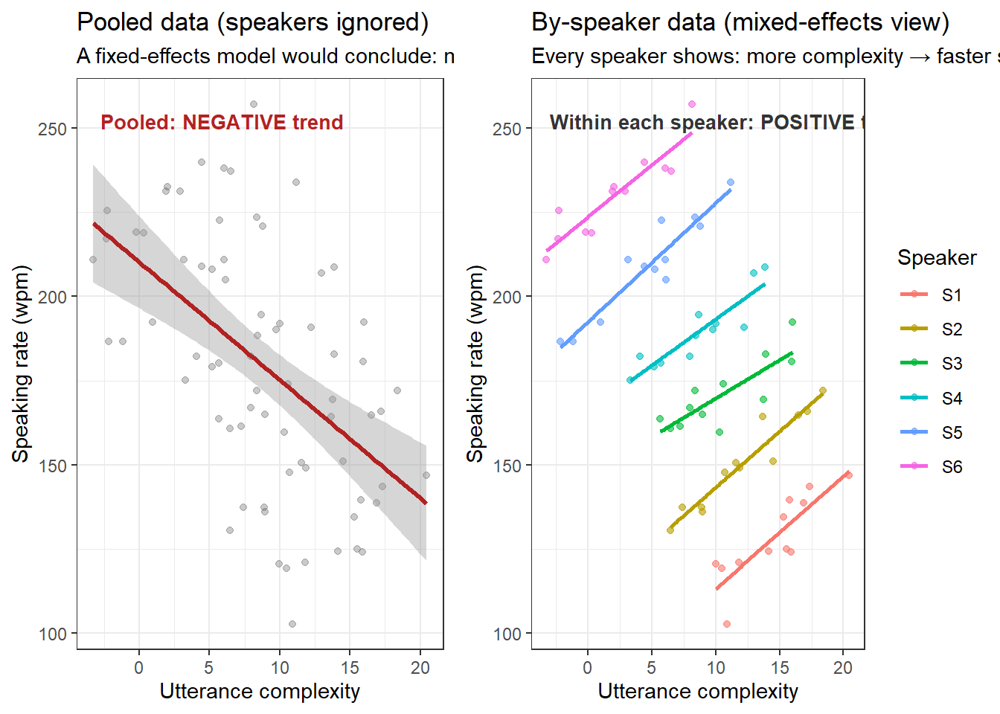
ImportantThe Simpson’s Paradox Lesson
The pooled regression line tells a completely false story. The apparent negative trend in the left panel arises purely because speakers with higher baseline speaking rates happened to be assigned (or self-selected into) utterances of lower complexity — a between-speaker confound that pollutes the aggregate estimate.
A mixed-effects model with a random intercept for Speaker separates the within-speaker effect of complexity (the true relationship of interest) from the between-speaker variation in baseline rate, recovering the correct positive slope.
This is not a contrived pathological case. It happens routinely in:
- Corpus data: high-frequency words tend to be shorter — but within each word frequency band, longer words are used in more predictable contexts, confounding length–predictability correlations
- Reaction time experiments: slower participants may naturally be tested on harder items
- Longitudinal data: earlier time-points in a study tend to involve different conditions than later time-points, creating spurious temporal trends
Always model the grouping structure. A fixed-effects model applied to grouped data may not just be imprecise — it may point in entirely the wrong direction.
Fixed Effects vs. Random Effects
Mixed-effects models are called mixed because they contain both fixed effects and random effects:
Fixed effects are the predictors you are directly interested in — the variables whose coefficients you want to estimate and interpret. They are fixed in the sense that, if you were to repeat the study, you would use the same levels (e.g. Male vs. Female, Primed vs. Unprimed). Fixed effects are the same as the predictors in an ordinary regression model.
Random effects represent the grouping structure of the data. They are random in the sense that the levels observed in your data are treated as a random sample from a larger population of possible levels. Common random effects in linguistics include:
| Random effect | Why it is random |
|---|---|
| Speaker / participant | The 30 speakers in your study are a sample from all possible speakers |
| Text / document | The 50 texts in your corpus are a sample from all possible texts |
| Word / lexical item | The 200 words tested are a sample from the mental lexicon |
| Experimental item | The 40 sentences in your experiment are a sample from all possible sentences |
| School / class | The 20 classes in your study are a sample from all possible classes |
ImportantKey Rules for Random Effects
- Random effects must be categorical (nominal or ordinal with many levels). They cannot be continuous.
- Random effects should have many levels. A useful rule of thumb: use a variable as a fixed effect if it has fewer than 5 levels; consider it as a random effect if it has more than 10 levels (Zuur and Ieno 2016). Variables with 5–10 levels can go either way, but theoretical justification (random sample, nestedness) should guide the decision.
- Random effects represent a random sample. If you would expect the levels to change with every new sample you drew, it is a random effect. If the levels would always be the same (e.g. Male/Female), it is a fixed effect.
- Random effects absorb residual grouping variance rather than being of direct inferential interest.
When to Use Mixed-Effects Models
Use a mixed-effects model whenever:
- The same participant, speaker, or item contributes more than one observation to the data (repeated measures)
- Observations are nested within higher-level units (students within classes, words within texts)
- You want to generalize beyond the specific levels in your data (to all possible speakers, not just the 30 in your sample)
- A fixed-effects model produces a singular fit warning suggesting random variance is being absorbed into fixed effects
Do not use a mixed-effects model simply to control for a nuisance variable that has only a few levels (e.g. three experimental conditions). Use fixed effects for that purpose.
Assumptions
Mixed-effects models share the core assumptions of their fixed-effects counterparts but add a few specific to the random effects structure:
Shared with fixed-effects regression: - The relationship between predictors and response is correctly specified (correct functional form) - Residuals are independent within groups (after accounting for the random effects) - Homoscedasticity (for linear models): residual variance is constant - No severe multicollinearity among fixed-effects predictors
Specific to mixed-effects models: - Random effects are normally distributed with mean zero. This applies to both random intercepts and random slopes. - Random effects and fixed-effects predictors are uncorrelated (an assumption that can be violated; see Mundlak correction for remedies) - Sufficient sample size at each level. There is no universally agreed minimum, but very small numbers of observations per random effect level (e.g. fewer than 5) can make random effect variance estimates unreliable.
NoteHow Large Does My Sample Need to Be?
Bell et al. (2008) showed in simulation that small numbers of observations per random-effect level (even as few as one) do not cause serious bias in fixed-effects coefficients, as long as the total number of random-effect levels is reasonably large (500 or more). However, random-effect variance estimates themselves become unreliable with very few observations per level. As a practical guideline, aim for at least 5–10 observations per random-effect level for reliable variance estimates, and at least 20–30 random-effect levels for the random-effect structure to be worthwhile.
Which Model Type?
The choice of mixed-effects model type mirrors the choice in fixed-effects regression and depends on the type of dependent variable:
| Dependent variable | Model type | Key function |
|---|---|---|
| Continuous (numeric) | Linear mixed-effects |
lmer() in lme4; lme() in nlme
|
| Binary (0/1, yes/no) | Logistic mixed-effects | glmer(..., family = binomial) |
| Count (non-negative integers) | Poisson / NB mixed-effects |
glmer(..., family = poisson); glmer.nb()
|
| Ordered categorical (Likert) | Ordinal mixed-effects |
clmm() in ordinal
|
| Unordered categorical (3+ levels) | Multinomial mixed-effects |
mblogit() in mclogit
|
Note✎ Check Your Understanding — Question 1
Which of the following is the most important reason to use a mixed-effects model rather than a fixed-effects model?
- Mixed-effects models always produce lower AIC values
- Mixed-effects models account for the non-independence of observations grouped within higher-level units
- Mixed-effects models do not require normally distributed residuals
- Mixed-effects models can handle more predictors than fixed-effects models
Answer
b) Mixed-effects models account for the non-independence of observations grouped within higher-level units
This is the core motivation for mixed-effects models. When multiple observations come from the same speaker, text, or participant, they are correlated — a fixed-effects model treats them as independent, underestimates standard errors, and inflates Type I error. Mixed-effects models absorb this grouping structure through random effects, producing honest standard errors and reliable inferential tests. The other options are all incorrect: mixed-effects models do not always have lower AIC (simpler fixed-effects models can win), they still assume normally distributed random effects, and there is no advantage in the number of predictors they can accommodate.
12 Random Effects Structure
NoteSection Overview
What you will learn: The difference between random intercepts and random slopes, and between nested and crossed random effects, with linguistic examples of each
Random Intercepts vs. Random Slopes
The random effects structure of a mixed-effects model can take several forms. Understanding the distinction is essential for correctly specifying your model.
Random Intercepts
A random intercept model allows each level of the grouping variable to have its own intercept — its own baseline level of the response — while sharing a common slope across all groups. This is the most commonly used random effects structure.
In lme4 notation, a random intercept for Speaker is written as (1 | Speaker). The 1 represents the intercept.
Example: You are studying how speech rate (words per minute) varies with utterance length across speakers. A random intercept model gives each speaker their own baseline speech rate while estimating a single common effect of utterance length:
SpeechRate ~ UtteranceLength + (1 | Speaker)Random Slopes
A random slope model allows the effect of a predictor to vary across levels of the grouping variable — each group has its own slope for that predictor. Random slopes can be added with or without random intercepts, but in practice they are almost always combined with random intercepts.
In lme4 notation, a random slope for UtteranceLength by Speaker is written as (1 + UtteranceLength | Speaker) or equivalently (UtteranceLength | Speaker).
Example: You suspect that the effect of utterance length on speech rate may be stronger for some speakers than others — some speakers slow down substantially for long utterances, others do not. A random slope model allows this:
SpeechRate ~ UtteranceLength + (1 + UtteranceLength | Speaker)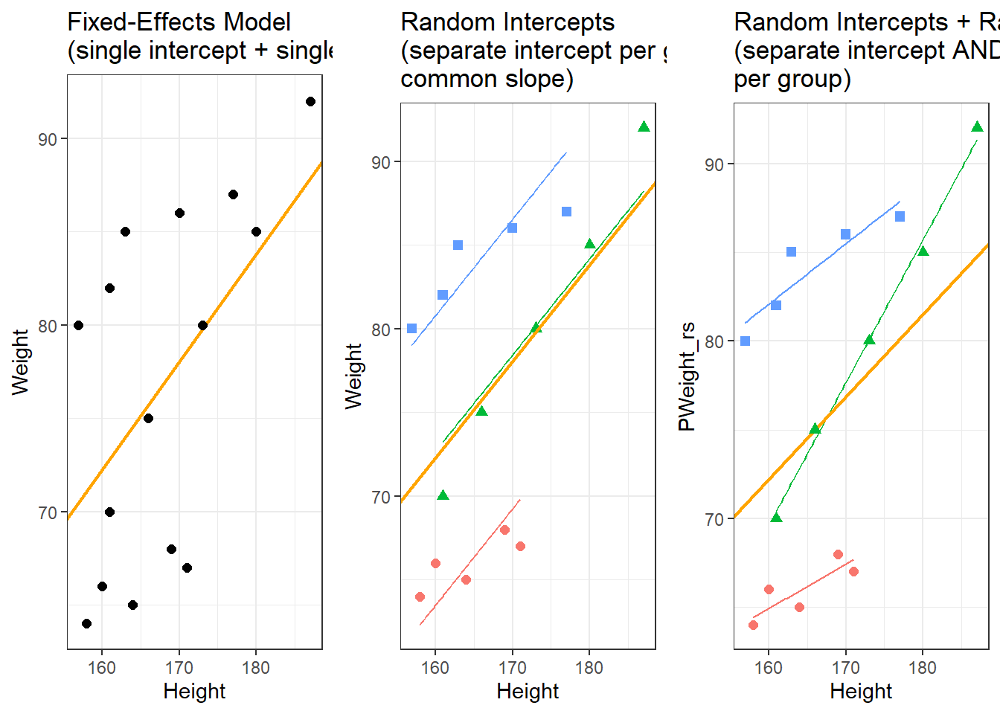
The orange line in each panel shows the overall (population-level) regression line. In the random-intercept panel, the group lines are parallel — they share the same slope but differ in their starting point. In the random-intercepts-and-slopes panel, the lines are no longer parallel — both the intercept and the direction of the effect differ by group.
TipWhich Random Effects Structure Should I Use?
Winter (2019, 241–44) provides an excellent practical guide. The short version:
- Start with the maximal random effects structure justified by the design — that is, include random slopes for every within-group predictor (Barr et al. 2013)
- If the maximal model fails to converge or produces a singular fit, simplify by removing random slope correlations first (use
(1 + x || Group)instead of(1 + x | Group)), then remove random slopes starting with those explaining the least variance - Always justify your final random effects structure explicitly when reporting results
Nested vs. Crossed Random Effects
A second important distinction is whether random effects are nested or crossed.
Nested Random Effects
Random effects are nested when the levels of one grouping variable are entirely contained within levels of another. For example, students are nested within classes — no student belongs to more than one class.
In lme4 notation, students nested within classes is written as (1 | Class/Student) or equivalently (1 | Class) + (1 | Class:Student).
Linguistic example: Words are nested within texts, which are nested within authors:
FrequencyEffect ~ WordLength + (1 | Author/Text)Crossed Random Effects
Random effects are crossed when every level of one grouping variable appears in combination with every (or most) levels of another. In a typical psycholinguistic experiment, every participant sees every item — participants and items are fully crossed.
In lme4 notation, crossed random effects for participants and items are written as two separate terms:
RT ~ Condition + (1 | Participant) + (1 | Item)
ImportantA Common Mistake
Many researchers who should be fitting crossed random effects for participants and items mistakenly aggregate over items and fit only a by-participant random effect (or vice versa). Murayama et al. (2014) famously demonstrated that ignoring item-level random effects inflates Type I error substantially. Always fit random effects for both participants and items in psycholinguistic experiments.
Summary of random effects structure notation in lme4:
| Structure | Formula | Example |
|---|---|---|
Random intercept for G
|
(1 | G) |
(1 | Speaker) |
Random slope for X by G (with correlation) |
(1 + X | G) |
(1 + Age | Speaker) |
Random slope for X by G (no correlation) |
(1 + X | G) |
(1 + Age || Speaker) |
Nested: levels of G2 within G1
|
(1 | G1/G2) |
(1 | Author/Text) |
| Crossed: separate random effects | (1 | G1) + (1 | G2) |
(1 | Participant) + (1 | Item) |
12.1 Manual Contrast Coding
NoteWhy This Section Matters
Contrast coding determines how categorical predictors are parameterised — that is, what the model intercept and each coefficient actually represent. R applies treatment (dummy) contrasts by default, which is appropriate for many observational studies but can be misleading or suboptimal in experimental designs. Choosing the right contrast scheme before fitting your model is not optional: it affects the interpretation of every coefficient, including interactions.
When you include a categorical fixed effect in a mixed-effects model, R converts it into one or more numeric columns behind the scenes — the contrast matrix. The default in R is treatment coding (also called dummy coding), where one level is chosen as the reference and all other levels are compared to it. But this is only one option among several, each with different interpretations.
Treatment (Dummy) Coding
Default in R. One level is the reference (intercept = mean of the reference group); each coefficient is the difference between that level and the reference.
# Default treatment contrasts for a 3-level factor
factor_example <- factor(c("A", "B", "C"))
contr.treatment(levels(factor_example)) B C
A 0 0
B 1 0
C 0 1The intercept estimates the mean of level A; the coefficient for B is the A→B difference; the coefficient for C is the A→C difference.
Best for: observational studies with a natural reference category (e.g. a control group, native speakers vs. L2 learners).
Sum (Deviation) Coding
Each coefficient represents the deviation of a group from the grand mean. The intercept estimates the grand mean (unweighted). The last level is not explicitly estimated but is the negative sum of all other deviations.
contr.sum(3) # for a 3-level factor [,1] [,2]
1 1 0
2 0 1
3 -1 -1Best for: experimental designs where no single level is a natural baseline; allows interpretation of main effects independently of arbitrary reference level choices. Particularly useful for interactions: with sum coding, the coefficient for a main effect represents its effect averaged over the other factor’s levels, not just at the reference level.
TipSum Coding and Interactions
When a model includes an interaction between two factors, the interpretation of the main-effect coefficients changes depending on the contrast scheme:
- Treatment coding: main-effect coefficients represent effects at the reference level of the other factor — rarely the quantity of interest
- Sum coding: main-effect coefficients represent effects averaged across levels of the other factor — usually more informative
For factorial experimental designs, sum coding is strongly preferred.
Helmert Coding
Each level is compared to the mean of all subsequent levels. Useful when the factor has a natural ordering (e.g. proficiency levels: Beginner, Intermediate, Advanced) and you want to test sequential step contrasts.
contr.helmert(4) # for a 4-level factor [,1] [,2] [,3]
1 -1 -1 -1
2 1 -1 -1
3 0 2 -1
4 0 0 3Custom / Planned Contrast Coding
For experimental studies with specific theoretical predictions, manually specified contrasts give maximum interpretive precision. Each contrast compares exactly the groups you are interested in, and the coefficients directly answer your research questions.
Example: Suppose you have four conditions — Baseline, Low-Priming, High-Priming, and Control — and your theoretical predictions are:
- Any priming vs. Baseline
- High-Priming vs. Low-Priming
- Control vs. Baseline
# 4-level factor: Baseline, Low, High, Control
# Define three orthogonal planned contrasts
my_contrasts <- matrix(
c(
-3, 1, 1, 1, # Contrast 1: Baseline vs. (Low + High + Control)
0, -1, 1, 0, # Contrast 2: Low vs. High (priming gradient)
-1, 0, 0, 1 # Contrast 3: Baseline vs. Control
),
ncol = 3
)
colnames(my_contrasts) <- c("BasevOther", "LowvHigh", "BasevControl")
rownames(my_contrasts) <- c("Baseline", "Low", "High", "Control")
# Check orthogonality: all pairwise dot products should be 0
t(my_contrasts) %*% my_contrasts # off-diagonal should be 0 BasevOther LowvHigh BasevControl
BasevOther 12 0 4
LowvHigh 0 2 0
BasevControl 4 0 2# Apply to a factor in your data frame
# (illustration — adapt column name and data frame to your own data)
# mydata$Condition <- factor(mydata$Condition,
# levels = c("Baseline", "Low", "High", "Control"))
# contrasts(mydata$Condition) <- my_contrasts
#
# Then fit as normal:
# lmer(RT ~ Condition + (1 | Participant) + (1 | Item), data = mydata)
ImportantRules for Valid Contrast Matrices
For a factor with \(k\) levels, you can specify at most \(k - 1\) contrasts. For contrasts to be interpretable as independent tests:
- Each contrast must sum to zero across all groups (positive weights cancel negative weights)
- For orthogonal contrasts: the dot product of any two contrast vectors must equal zero — this ensures each contrast tests a unique piece of variance and p-values are independent
- Orthogonality is not strictly required, but correlated contrasts inflate Type I error for the correlated tests
Planned contrasts should always be specified before looking at the data. Post-hoc contrast selection based on observed patterns requires appropriate correction (e.g. Tukey HSD via emmeans).
Applying Contrasts Before Model Fitting
# General workflow for applying contrasts in any mixed-effects model
# Step 1: Create factor with explicitly ordered levels
# mydata$Condition <- factor(mydata$Condition,
# levels = c("Reference", "LevelB", "LevelC"))
# Step 2: Apply contrast matrix or built-in scheme
# contrasts(mydata$Condition) <- contr.sum(3) # sum coding
# contrasts(mydata$Condition) <- contr.helmert(3) # helmert coding
# contrasts(mydata$Condition) <- my_contrasts # custom planned contrasts
# Step 3: Verify what was applied
# contrasts(mydata$Condition)
# Step 4: Fit model — contrasts are applied automatically
# m1 <- lmer(Response ~ Condition + (1 + Condition | Participant) + (1 | Item),
# data = mydata, REML = TRUE)
NoteGlobal vs. Local Contrast Setting
R allows you to change contrasts globally using options(contrasts = c("contr.sum", "contr.poly")). This applies sum coding to all unordered factors and polynomial coding to ordered factors for the rest of the session.
A safer approach is to set contrasts locally on individual factor columns using contrasts(mydata$Factor) <- .... This makes your contrast choices explicit and reproducible, and avoids unintended effects on other models fitted in the same session.
Note✎ Check Your Understanding — Question 2
In a study where 40 participants each respond to 20 experimental items (every participant sees every item), which random effects structure is most appropriate?
-
(1 | Participant)— random intercept for participant only -
(1 | Item)— random intercept for item only -
(1 | Participant) + (1 | Item)— crossed random intercepts for participant and item -
(1 | Participant/Item)— items nested within participants
Answer
c) (1 | Participant) + (1 | Item) — crossed random intercepts for participant and item
Because every participant sees every item, participants and items are crossed, not nested. Crossed random effects are specified as two separate terms in the formula. Option (a) ignores item-level variance and inflates Type I error (the “language as fixed effect” fallacy described by Clark 1973). Option (b) ignores participant-level variance. Option (d) would be correct if each item belonged to only one participant (nested design), which is not the case here.
13 Linear Mixed-Effects Regression
NoteSection Overview
What you will learn: How to fit, evaluate, and report a linear mixed-effects model using the preposition frequency data; includes random effect selection, fixed-effect model building, model diagnostics, effect size extraction, and a complete write-up template
Introduction
Linear mixed-effects models extend ordinary multiple linear regression to hierarchical data where the response variable is continuous and approximately normally distributed. The formal representation of a model with random intercepts is:
\[f_{(x)} = \alpha_i + \beta x + \epsilon\]
where \(\alpha_i\) is a group-specific intercept for group \(i\) (the population intercept plus the random deviation for that group), \(\beta\) is the fixed-effects slope, and \(\epsilon\) is the residual error. When the model also has random slopes:
\[f_{(x)} = \alpha_i + \beta_i x + \epsilon\]
where both the intercept \(\alpha_i\) and the slope \(\beta_i\) vary by group.
Advantages of linear mixed-effects models over simpler alternatives:
- Multivariate: test the effect of several predictors simultaneously while controlling for all others
- Handle dependence: explicitly model within-speaker or within-text correlation rather than ignoring it
- Rich diagnostics: enable checking of multicollinearity, homoscedasticity, and normality of residuals
- Generalisability: random effects allow generalisation beyond the specific speakers/texts in your sample
Disadvantages:
- Prone to high Type II error (\(\beta\)-errors) in small samples (Johnson 2014)
- Require relatively large data sets for stable estimates
- Model selection and random effects specification require careful thought
Example: Preposition Use Across Time by Genre
We use a data set containing the relative frequency of prepositions per 1,000 words in English texts written between 1150 and 1913, across multiple genres and regions. The research question is: does the frequency of prepositions change systematically over time, and does this change differ by genre?
Loading and Inspecting the Data
# load data
lmmdata <- base::readRDS(here::here("data", "lmd.rda")) |>
dplyr::mutate(Date = as.numeric(Date))Date |
Genre |
Text |
Prepositions |
Region |
|---|---|---|---|---|
1,736 |
Science |
albin |
166.01 |
North |
1,711 |
Education |
anon |
139.86 |
North |
1,808 |
PrivateLetter |
austen |
130.78 |
North |
1,878 |
Education |
bain |
151.29 |
North |
1,743 |
Education |
barclay |
145.72 |
North |
1,908 |
Education |
benson |
120.77 |
North |
1,906 |
Diary |
benson |
119.17 |
North |
1,897 |
Philosophy |
boethja |
132.96 |
North |
1,785 |
Philosophy |
boethri |
130.49 |
North |
1,776 |
Diary |
boswell |
135.94 |
North |
1,905 |
Travel |
bradley |
154.20 |
North |
1,711 |
Education |
brightland |
149.14 |
North |
1,762 |
Sermon |
burton |
159.71 |
North |
1,726 |
Sermon |
butler |
157.49 |
North |
1,835 |
PrivateLetter |
carlyle |
124.16 |
North |
The data set contains: Date (year of composition), Genre, Text (text name), Prepositions (relative frequency per 1,000 words), and Region.
Exploratory Visualisation
p1 <- ggplot(lmmdata, aes(x = Date, y = Prepositions)) +
geom_point(alpha = .4) +
geom_smooth(method = "lm", se = TRUE, color = "red", linetype = "dashed") +
theme_bw() +
labs(y = "Prepositions per 1,000 words", x = "Year of composition",
title = "Preposition frequency over time")
p2 <- ggplot(lmmdata, aes(x = reorder(Genre, -Prepositions), y = Prepositions)) +
geom_boxplot(fill = "gray90") +
theme_bw() +
theme(axis.text.x = element_text(angle = 90, hjust = 1)) +
labs(x = "Genre", y = "Prepositions per 1,000 words",
title = "Preposition frequency by genre")
p3 <- ggplot(lmmdata, aes(Prepositions)) +
geom_histogram(fill = "gray70", color = "white", bins = 20) +
theme_bw() +
labs(y = "Count", x = "Frequency (prepositions)",
title = "Distribution of preposition frequency")
gridExtra::grid.arrange(grobs = list(p1, p2, p3),
widths = c(1, 1),
layout_matrix = rbind(c(1,1), c(2,3)))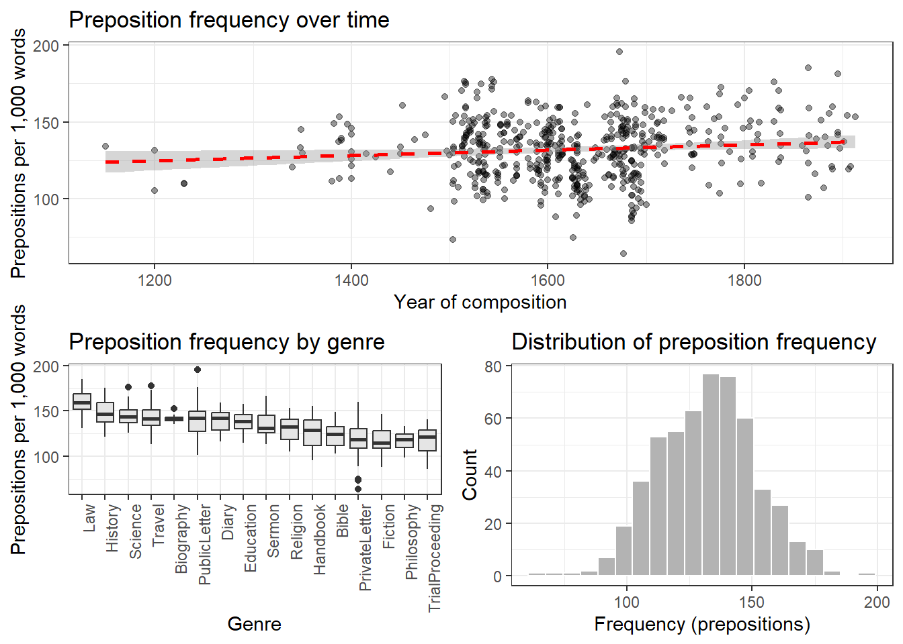
The scatter plot suggests a modest upward trend over time. The boxplots reveal substantial genre differences — some genres consistently use more prepositions than others. The histogram confirms that preposition frequency is approximately normally distributed, supporting the use of a linear model.
ggplot(lmmdata, aes(Date, Prepositions)) +
geom_point(alpha = .4) +
facet_wrap(~ Genre, nrow = 4) +
geom_smooth(method = "lm", se = TRUE) +
theme_bw() +
labs(x = "Year of composition", y = "Prepositions per 1,000 words") +
coord_cartesian(ylim = c(0, 220))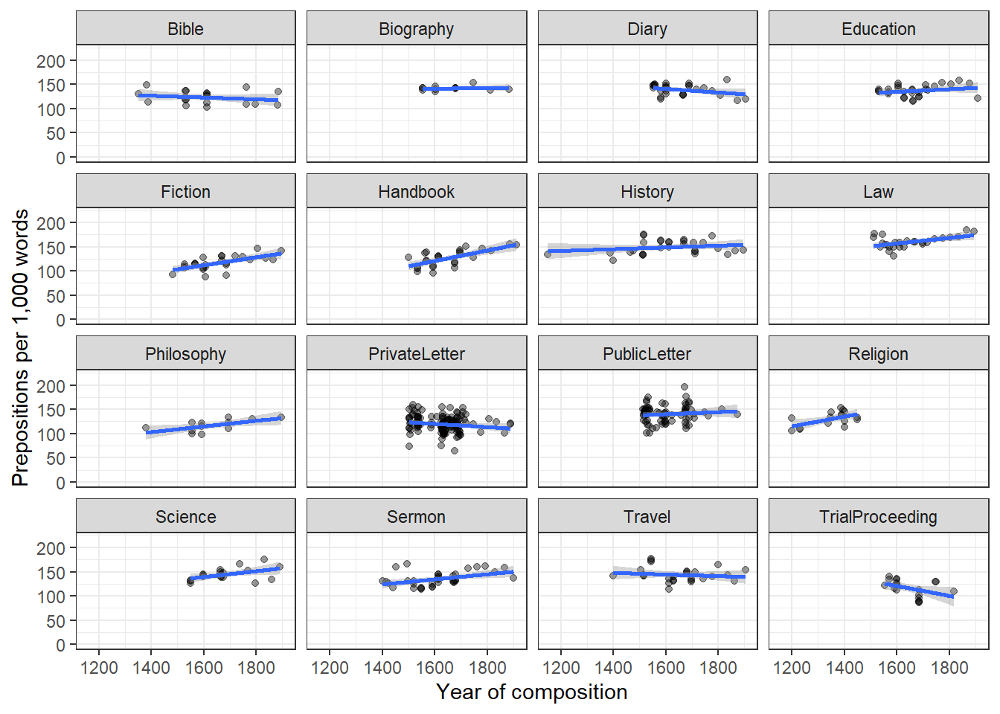
The faceted plot shows that the temporal trend differs substantially across genres — this is an argument for including Genre as a random effect (it absorbs genre-level baseline differences) while estimating a single population-level temporal trend.
Centering the Date Variable
Centering numeric predictors (subtracting the mean) is strongly recommended before fitting mixed-effects models. Without centering, the model intercept is the predicted value at year 0, which is meaningless for this data. After centering, the intercept represents the predicted value at the mean year in the sample, which is interpretable.
Mean of original Date: 1626.1 Mean of centered Date: 0
TipCentering vs. Scaling
Centering (subtracting the mean) makes the intercept interpretable — it is now the predicted response at the mean value of the predictor rather than at zero.
Scaling (dividing by the standard deviation, in addition to centering) makes coefficients comparable across predictors measured on different scales. Use scale(x, scale = TRUE) for this. Scaling is particularly useful when you want to compare the relative importance of predictors or when predictors are on very different measurement scales.
For this example we center only, as the date variable is on a natural scale (years) and we want to interpret the coefficient in those units.
Step 1: Testing Whether Random Effects Are Warranted
Before adding any fixed effects, we test whether including a random effect structure is statistically justified. We compare an intercept-only fixed-effects model (glm) with an intercept-only mixed-effects model that includes Genre as a random intercept (lmer).
The AIC of the mixed-effects model is substantially lower than the AIC of the fixed-effects model, confirming that adding Genre as a random effect is warranted.
Step 2: Choosing the Random Effects Structure
Now we compare two candidate random effects structures: random intercepts only vs. random intercepts + random slopes for Date. We use REML = TRUE for this comparison, as recommended when comparing random effects structures (Pinheiro and Bates 2000; Winter 2019).
Data: lmmdata
Models:
ma.lmer: Prepositions ~ Date + (1 | Genre)
mb.lmer: Prepositions ~ Date + (1 + Date | Genre)
npar AIC BIC logLik -2*log(L) Chisq Df
ma.lmer 4 4499.148092 4516.292084 -2245.574046 4491.148092
mb.lmer 6 4486.699509 4512.415498 -2237.349755 4474.699509 16.44858 2
Pr(>Chisq)
ma.lmer
mb.lmer 0.00026806 ***
---
Signif. codes: 0 '***' 0.001 '**' 0.01 '*' 0.05 '.' 0.1 ' ' 1The model with random slopes for Date by Genre fits significantly better (lower AIC, significant χ² test). In a real analysis we would proceed with the random-intercepts-and-slopes model. For clarity of exposition in this tutorial, we continue with the simpler random-intercepts-only model (ma.lmer).
WarningREML vs. ML for Model Comparison
Use REML (REML = TRUE) when comparing models that differ only in their random effects structure (same fixed effects, different random effects).
Use ML (REML = FALSE) when comparing models that differ in their fixed effects structure. This is because REML estimates are conditioned on the fixed effects, making REML-based likelihood ratios invalid for fixed-effects comparisons.
When using anova() to compare lmer models with different fixed effects, set refit = TRUE (the default) so lme4 automatically refits using ML before comparing.
Step 3: Fixed-Effects Model Building
With the random effects structure decided, we now test which fixed effects to include. We compare models using likelihood ratio tests (anova() with refit = TRUE so models are refitted with ML).
Data: lmmdata
Models:
m0.lmer: Prepositions ~ 1 + (1 | Genre)
m1.lmer: Prepositions ~ (1 | Genre) + Date
npar AIC BIC logLik -2*log(L) Chisq Df
m0.lmer 3 4501.947337 4514.805331 -2247.973668 4495.947337
m1.lmer 4 4495.017736 4512.161728 -2243.508868 4487.017736 8.9296 1
Pr(>Chisq)
m0.lmer
m1.lmer 0.0028059 **
---
Signif. codes: 0 '***' 0.001 '**' 0.01 '*' 0.05 '.' 0.1 ' ' 1The model with Date fits significantly better. Date correlates significantly with preposition frequency.
Date Region
1.20287667936 1.20287667936 anova(m2.lmer, m1.lmer, test = "Chi")Data: lmmdata
Models:
m1.lmer: Prepositions ~ (1 | Genre) + Date
m2.lmer: Prepositions ~ (1 | Genre) + Date + Region
npar AIC BIC logLik -2*log(L) Chisq Df
m1.lmer 4 4495.017736 4512.161728 -2243.508868 4487.017736
m2.lmer 5 4494.624343 4516.054333 -2242.312171 4484.624343 2.39339 1
Pr(>Chisq)
m1.lmer
m2.lmer 0.12185Three indicators show that Region should not be included: AIC does not decrease, BIC increases, and p > .05. We check whether Region is involved in a significant interaction before finalising the model.
Date Region Date:Region
1.96923042276 1.20324697637 1.78000887977 anova(m3.lmer, m1.lmer, test = "Chi")Data: lmmdata
Models:
m1.lmer: Prepositions ~ (1 | Genre) + Date
m3.lmer: Prepositions ~ (1 | Genre) + Date + Region + Date:Region
npar AIC BIC logLik -2*log(L) Chisq Df
m1.lmer 4 4495.017736 4512.161728 -2243.508868 4487.017736
m3.lmer 6 4496.124872 4521.840861 -2242.062436 4484.124872 2.89286 2
Pr(>Chisq)
m1.lmer
m3.lmer 0.23541The interaction is also non-significant. Our final minimal adequate model contains only Date as a fixed effect.
summary(m1.lmer)Linear mixed model fit by REML ['lmerMod']
Formula: Prepositions ~ (1 | Genre) + Date
Data: lmmdata
REML criterion at convergence: 4491.1
Scaled residuals:
Min 1Q Median 3Q Max
-3.734915441 -0.657038004 0.005865025 0.661298615 3.596659863
Random effects:
Groups Name Variance Std.Dev.
Genre (Intercept) 159.021120 12.6103576
Residual 228.764179 15.1249522
Number of obs: 537, groups: Genre, 16
Fixed effects:
Estimate Std. Error t value
(Intercept) 133.88516211469 3.24749296248 41.22724
Date 0.01894493515 0.00632363682 2.99589
Correlation of Fixed Effects:
(Intr)
Date 0.005 Step 4: Model Diagnostics with performance
The performance package provides a comprehensive, one-call diagnostic suite for mixed-effects models. check_model() produces a panel of six diagnostic plots: linearity of residuals, homoscedasticity, influential observations (Cook’s distance), normality of residuals, normality of random effects, and multicollinearity. This replaces the need to manually call multiple base-R plotting functions.
# Comprehensive model diagnostics in one call
performance::check_model(m1.lmer)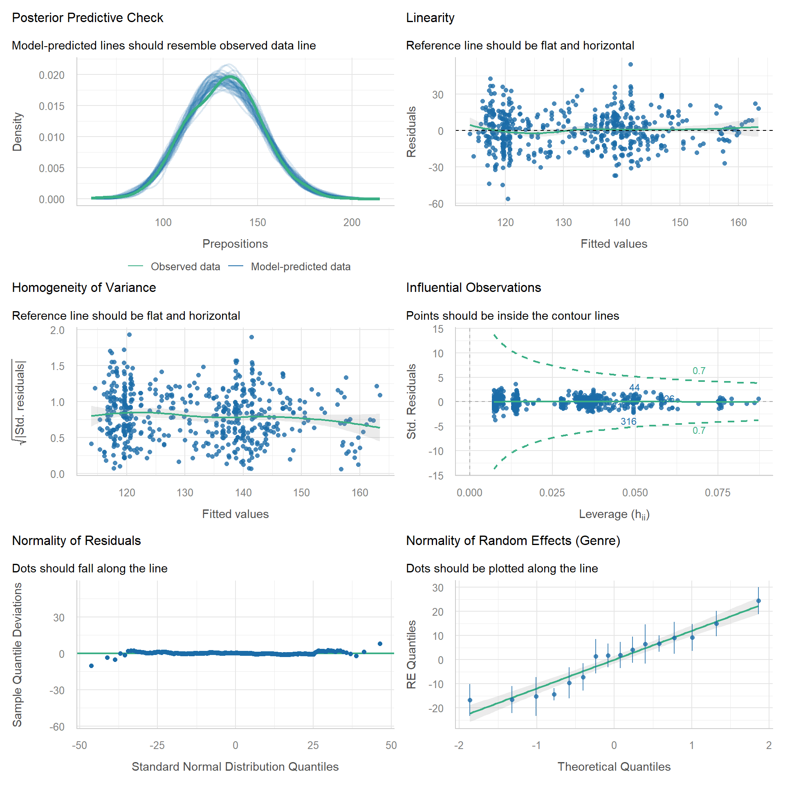
The panels are interpreted as follows:
- Linearity (top-left): The reference line should be approximately flat and horizontal — systematic curvature indicates a misspecified functional form
- Homoscedasticity (top-right): Points should be evenly spread across fitted values with no funnel shape — a widening spread indicates heteroscedasticity
- Influential observations (middle-left): Points with Cook’s distance > 0.5 (marked with a dashed line) may be unduly influencing the model
- Normality of residuals (middle-right): Points should follow the diagonal line closely
- Normality of random effects (bottom-left): The random-effect BLUPs (Best Linear Unbiased Predictors) should follow the diagonal — deviations indicate departures from the normality assumption for random effects
- Multicollinearity (bottom-right): VIF (Variance Inflation Factor) values above 5–10 indicate problematic collinearity among fixed-effects predictors
We can also extract individual diagnostic statistics:
# Check homoscedasticity formally
performance::check_heteroscedasticity(m1.lmer)Warning: Heteroscedasticity (non-constant error variance) detected (p < .001).# Check normality of residuals
performance::check_normality(m1.lmer)OK: residuals appear as normally distributed (p = 0.554).# Check for influential observations
performance::check_outliers(m1.lmer)OK: No outliers detected.
- Based on the following method and threshold: cook (0.7).
- For variable: (Whole model)# Check multicollinearity
performance::check_collinearity(m1.lmer)NULLSome genres show more variability than others (particularly Letters). We test formally for heteroscedasticity across genres using Levene’s test as a supplementary check.
car::leveneTest(lmmdata$Prepositions, lmmdata$Genre, center = mean)Levene's Test for Homogeneity of Variance (center = mean)
Df F value Pr(>F)
group 15 1.74289 0.039906 *
521
---
Signif. codes: 0 '***' 0.001 '**' 0.01 '*' 0.05 '.' 0.1 ' ' 1
NoteLevene’s Test: Caveats
Levene’s test for homogeneity of variance has well-known problems: it lacks power with small samples (too lax) and is overly sensitive with large samples (too strict). Use performance::check_heteroscedasticity() and check_model() as the primary tools, and treat Levene’s test as a supplementary check only. Pinheiro and Bates (2000, 175–80) provide more nuanced guidance.
Levene’s test confirms heteroscedasticity across genres. We therefore switch to a weighted model using the lme function from nlme, which supports observation-level weights.
Step 5: Handling Heteroscedasticity with Weights
Model df AIC BIC logLik Test L.Ratio
m5.lme 1 19 4485.84955689 4567.28352069 -2223.92477845
m4.lme 2 4 4495.01773596 4512.16172834 -2243.50886798 1 vs 2 39.1681790667
p-value
m5.lme
m4.lme 0.0006The weighted model fits significantly better. We adopt it as our final model and inspect its parameters.
summary(m5.lme)Linear mixed-effects model fit by maximum likelihood
Data: lmmdata
AIC BIC logLik
4485.84955689 4567.28352069 -2223.92477845
Random effects:
Formula: ~1 | Genre
(Intercept) Residual
StdDev: 12.2631808124 14.3420265787
Variance function:
Structure: Different standard deviations per stratum
Formula: ~1 | Genre
Parameter estimates:
Bible Biography Diary Education Fiction
1.000000000000 0.340719922131 0.869529591941 0.788861415446 0.911718858006
Handbook History Law Philosophy PrivateLetter
1.096586432734 0.978750069335 0.784977716011 0.736988751895 1.190652740883
PublicLetter Religion Science Sermon Travel
1.218929184394 0.974646323962 0.848611735175 0.970873365315 1.086235097365
TrialProceeding
1.260207123026
Fixed effects: Prepositions ~ Date
Value Std.Error DF t-value p-value
(Intercept) 133.9640139919 3.144348306618 520 42.6046992663 0.0000
Date 0.0217418124 0.005454714153 520 3.9858756695 0.0001
Correlation:
(Intr)
Date 0.004
Standardized Within-Group Residuals:
Min Q1 Med Q3
-3.3190657058362 -0.6797224358638 0.0146860053179 0.6987149873619
Max
3.1039114834876
Number of Observations: 537
Number of Groups: 16 anova(m5.lme) numDF denDF F-value p-value
(Intercept) 1 520 1813.907203146 <.0001
Date 1 520 15.887204853 0.0001 Model df AIC BIC logLik Test L.Ratio
m0.lme 1 18 4496.28563020 4573.43359590 -2230.14281510
m5.lme 2 19 4485.84955689 4567.28352069 -2223.92477845 1 vs 2 12.4360733078
p-value
m0.lme
m5.lme 0.0004intervals(m5.lme, which = "fixed")Approximate 95% confidence intervals
Fixed effects:
lower est. upper
(Intercept) 127.7983408437279 133.9640139919199 140.1296871401120
Date 0.0110458012653 0.0217418124276 0.0324378235899Step 6: Effect Sizes and Visualisation
We extract marginal and conditional R² values using MuMIn::r.squaredGLMM(). The marginal R² represents the variance explained by the fixed effects alone; the conditional R² represents the variance explained by the full model (fixed + random effects) (Bartón 2020).
MuMIn::r.squaredGLMM(m1.lmer) R2m R2c
[1,] 0.0121971160211 0.417270545308We display the model summary table using sjPlot::tab_model().
sjPlot::tab_model(m5.lme)| Prepositions | |||
|---|---|---|---|
| Predictors | Estimates | CI | p |
| (Intercept) | 133.96 | 127.80 – 140.13 | <0.001 |
| Date | 0.02 | 0.01 – 0.03 | <0.001 |
| Random Effects | |||
| σ2 | 205.69 | ||
| τ00Genre | 150.39 | ||
| ICC | 0.42 | ||
| N Genre | 16 | ||
| Observations | 537 | ||
| Marginal R2 / Conditional R2 | 0.017 / 0.432 | ||
WarningR² Values in sjPlot
The conditional R² value may be missing or incorrect in the sjPlot summary table for lme objects. Always use r.squaredGLMM() from MuMIn for reliable marginal and conditional R² values for mixed-effects models.
sjPlot::plot_model(m5.lme, type = "pred", terms = c("Date")) +
scale_x_continuous(name = "Year of composition",
breaks = seq(-500, 300, 100),
labels = seq(1150, 1950, 100)) +
labs(title = "Predicted preposition frequency by year",
y = "Prepositions per 1,000 words") +
theme_bw()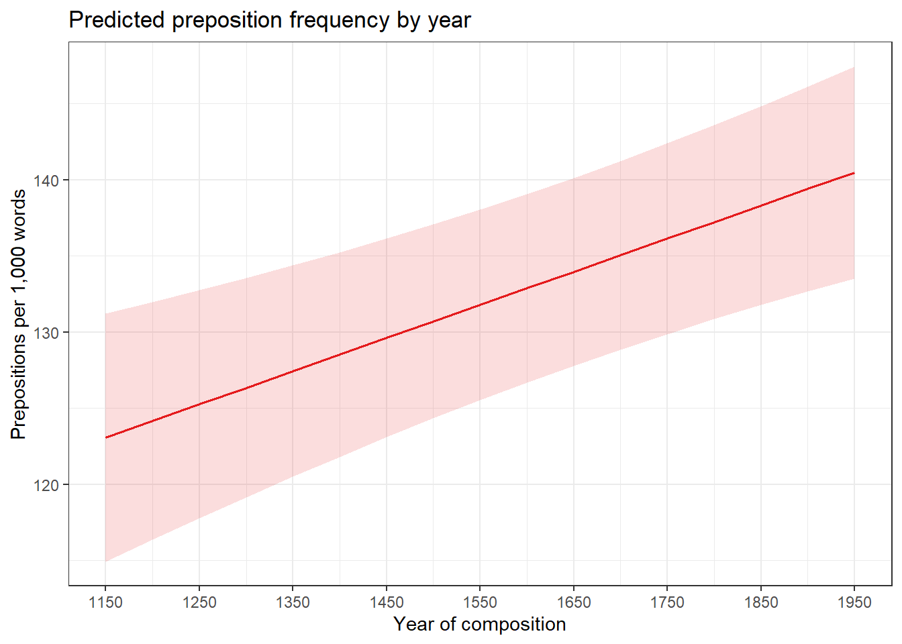
lmmdata$Predicted <- predict(m5.lme, lmmdata)
ggplot(lmmdata, aes(DateUnscaled, Predicted)) +
facet_wrap(~ Genre) +
geom_point(aes(x = DateUnscaled, y = Prepositions), color = "gray80", size = .5) +
geom_smooth(aes(y = Predicted), color = "gray20", method = "lm", se = TRUE) +
theme_bw() +
labs(x = "Year of composition",
y = "Prepositions per 1,000 words",
title = "Observed (grey) vs. predicted (line) preposition frequency by genre")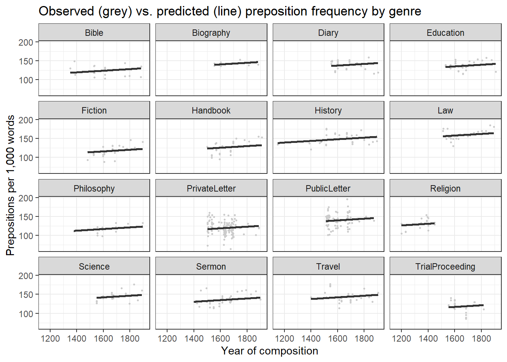
Step 7: Final Diagnostics
We run the full performance diagnostic panel on the weighted lme model. Note that check_model() supports lme objects from nlme directly.
performance::check_model(
m5.lme,
check = c("linearity", "homogeneity", "qq", "outliers")
)# Model performance summary: R², ICC, RMSE
performance::model_performance(m5.lme)# Indices of model performance
AIC | AICc | BIC | R2 (cond.) | R2 (marg.) | ICC | RMSE | Sigma
----------------------------------------------------------------------------
4490.3 | 4491.8 | 4571.7 | 0.432 | 0.017 | 0.422 | 14.897 | 14.342# Intraclass Correlation Coefficient — proportion of variance at group level
performance::icc(m5.lme)# Intraclass Correlation Coefficient
Adjusted ICC: 0.422
Unadjusted ICC: 0.415
TipThe Intraclass Correlation Coefficient (ICC)
The ICC from performance::icc() estimates what proportion of the total variance in the response is attributable to between-group differences (here, between genres). An ICC of .40 means 40% of variance in preposition frequency is due to genre differences, with the remaining 60% varying within genres. A high ICC reinforces the importance of including the grouping variable as a random effect.
The diagnostic panels are satisfactory: residuals form an unstructured cloud with no funnel shape (no heteroscedasticity remaining after weighting), the Q–Q plot is approximately linear, and no data points show excessively high Cook’s distance.
Reporting Results
summary(m5.lme)Linear mixed-effects model fit by maximum likelihood
Data: lmmdata
AIC BIC logLik
4485.84955689 4567.28352069 -2223.92477845
Random effects:
Formula: ~1 | Genre
(Intercept) Residual
StdDev: 12.2631808124 14.3420265787
Variance function:
Structure: Different standard deviations per stratum
Formula: ~1 | Genre
Parameter estimates:
Bible Biography Diary Education Fiction
1.000000000000 0.340719922131 0.869529591941 0.788861415446 0.911718858006
Handbook History Law Philosophy PrivateLetter
1.096586432734 0.978750069335 0.784977716011 0.736988751895 1.190652740883
PublicLetter Religion Science Sermon Travel
1.218929184394 0.974646323962 0.848611735175 0.970873365315 1.086235097365
TrialProceeding
1.260207123026
Fixed effects: Prepositions ~ Date
Value Std.Error DF t-value p-value
(Intercept) 133.9640139919 3.144348306618 520 42.6046992663 0.0000
Date 0.0217418124 0.005454714153 520 3.9858756695 0.0001
Correlation:
(Intr)
Date 0.004
Standardized Within-Group Residuals:
Min Q1 Med Q3
-3.3190657058362 -0.6797224358638 0.0146860053179 0.6987149873619
Max
3.1039114834876
Number of Observations: 537
Number of Groups: 16
NoteWrite-Up Template: Linear Mixed-Effects Model
A mixed-effects linear regression model was fitted to predict the frequency of prepositions per 1,000 words. Genre was included as a random effect (random intercepts). Observation-level weights (varIdent) were used to account for heteroscedasticity across genres; inclusion of weights significantly improved model fit (χ²(2) = 39.17, p = .0006). The final minimal adequate model was selected through a step-up procedure comparing nested models with likelihood ratio tests. The model significantly outperformed an intercept-only baseline (χ²(1) = 12.44, p = .0004). Date of composition was the only significant fixed-effect predictor: preposition frequency increased marginally but significantly over time (Estimate = 0.02, 95% CI [0.01, 0.03], p < .001). Neither region of composition nor a Date × Genre interaction significantly improved model fit. Marginal R² = .017; conditional R² = .432, indicating that the random effect structure (genre) accounts for the majority of the variance explained by the full model.
Note✎ Check Your Understanding — Question 3
A researcher fits a linear mixed-effects model and finds that the marginal R² is .03 while the conditional R² is .55. What does this pattern indicate?
- The fixed effects explain most of the variance; the random effects add little
- The model has a very poor fit overall
- The random effects (grouping structure) account for the majority of the variance, while the fixed effects explain only a small proportion
- The model violates the assumption of normally distributed residuals
Answer
c) The random effects (grouping structure) account for the majority of the variance, while the fixed effects explain only a small proportion
Marginal R² reflects the variance explained by fixed effects alone (.03 = 3%). Conditional R² reflects the variance explained by the entire model, including both fixed and random effects (.55 = 55%). The difference (.52) is the variance attributable to the random effects. This pattern — low marginal, high conditional R² — is common when grouping structure (e.g. genre, speaker, site) is a strong source of variability in the data but the specific fixed-effects predictors tested do not capture it fully. It does not indicate a poor fit or assumption violation.
14 Mixed-Effects Binomial Logistic Regression
NoteSection Overview
What you will learn: How to fit and interpret a mixed-effects logistic regression model for binary outcomes; includes testing the random effect, model selection with glmulti, visualisation of effects, model fit statistics, and a complete reporting template
Introduction
Mixed-effects binomial logistic regression extends fixed-effects logistic regression to hierarchical data with a binary dependent variable (yes/no, present/absent, 0/1). Everything about fixed-effects logistic regression — the logit link, odds ratios, the interpretation of coefficients — applies here. The addition of random effects handles the non-independence of observations that come from the same speaker or item.
Just as with linear mixed-effects models, random effects in logistic models shift the intercept of the logistic curve — and optionally also its slope — for each level of the grouping variable:
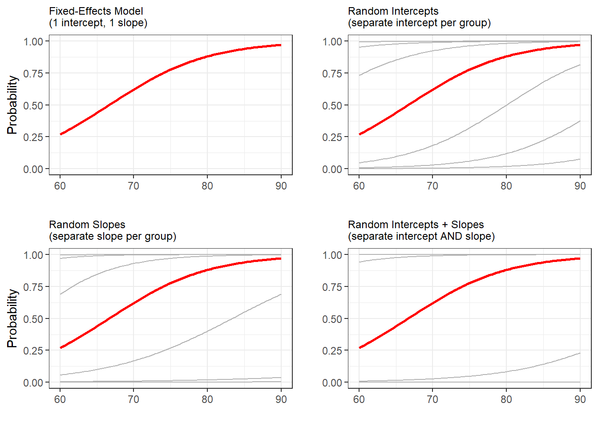
Example: Discourse like in Irish English
We investigate which factors correlate with the use of final discourse like (e.g. “The weather is shite, like!”) in Irish English. The dependent variable is binary (1 = speech unit contains a final discourse like; 0 = it does not).
Loading and Preparing the Data
ID |
Gender |
Age |
ConversationType |
Priming |
SUFlike |
|---|---|---|---|---|---|
S1A-061$C |
Women |
Young |
MixedGender |
NoPrime |
0 |
S1A-023$B |
Women |
Young |
MixedGender |
NoPrime |
0 |
S1A-054$A |
Women |
Young |
SameGender |
NoPrime |
0 |
S1A-090$B |
Women |
Young |
MixedGender |
NoPrime |
0 |
S1A-009$B |
Women |
Old |
SameGender |
Prime |
0 |
S1A-085$E |
Men |
Young |
MixedGender |
Prime |
1 |
S1A-003$C |
Women |
Young |
MixedGender |
NoPrime |
1 |
S1A-084$C |
Women |
Young |
SameGender |
NoPrime |
0 |
S1A-076$A |
Women |
Young |
SameGender |
NoPrime |
0 |
S1A-083$D |
Men |
Old |
MixedGender |
NoPrime |
1 |
S1A-068$A |
Women |
Young |
SameGender |
NoPrime |
0 |
S1A-066$B |
Women |
Young |
SameGender |
NoPrime |
0 |
S1A-061$A |
Men |
Old |
MixedGender |
NoPrime |
1 |
S1A-049$A |
Women |
Young |
SameGender |
NoPrime |
0 |
S1A-022$B |
Women |
Young |
MixedGender |
NoPrime |
0 |
Exploratory Visualisation
ggplot(mblrdata, aes(Gender, SUFlike, color = Priming)) +
facet_wrap(Age ~ ConversationType) +
stat_summary(fun = mean, geom = "point", size = 2) +
stat_summary(fun.data = mean_cl_boot, geom = "errorbar", width = 0.2) +
theme_bw() +
theme(legend.position = "top") +
labs(x = "", y = "Observed probability of discourse like",
title = "Discourse like by gender, age, conversation type, and priming") +
scale_color_manual(values = c("gray20", "gray70"))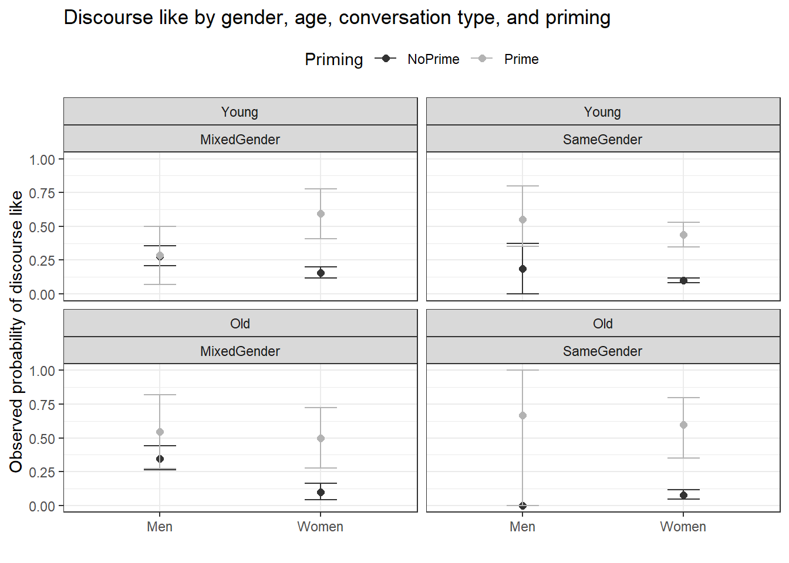
Key patterns: men use discourse like more than women; primed contexts show substantially higher probability; mixed-gender conversations show slightly higher rates than same-gender conversations.
Testing the Random Effect
[1] 1828.49227105[1] 1838.17334856# Likelihood ratio test
null.id <- -2 * logLik(m0.glm) + 2 * logLik(m0.glmer)
pchisq(as.numeric(null.id), df = 1, lower.tail = FALSE)[1] 0.000631389565877Both the AIC reduction and the likelihood ratio test (p < .05) confirm that including speaker (ID) as a random intercept is warranted.
Model Selection
We use glmulti to search all possible models (main effects and two-way interactions) and select the model with the lowest BIC.
glmer.glmulti <- function(formula, data, random = "", ...) {
glmer(paste(deparse(formula), random),
family = binomial,
data = data,
control = glmerControl(optimizer = "bobyqa"), ...)
}
form_glmulti <- as.formula("SUFlike ~ Gender + Age + ConversationType + Priming")
mfit <- glmulti(form_glmulti,
random = "+ (1 | ID)",
data = mblrdata,
method = "h",
fitfunc = glmer.glmulti,
crit = "bic",
intercept = TRUE,
marginality = FALSE,
level = 2)Initialization...
TASK: Exhaustive screening of candidate set.
Fitting...
After 50 models:
Best model: SUFlike~1+Gender+ConversationType+Priming
Crit= 1696.58773399527
Mean crit= 1753.96253323457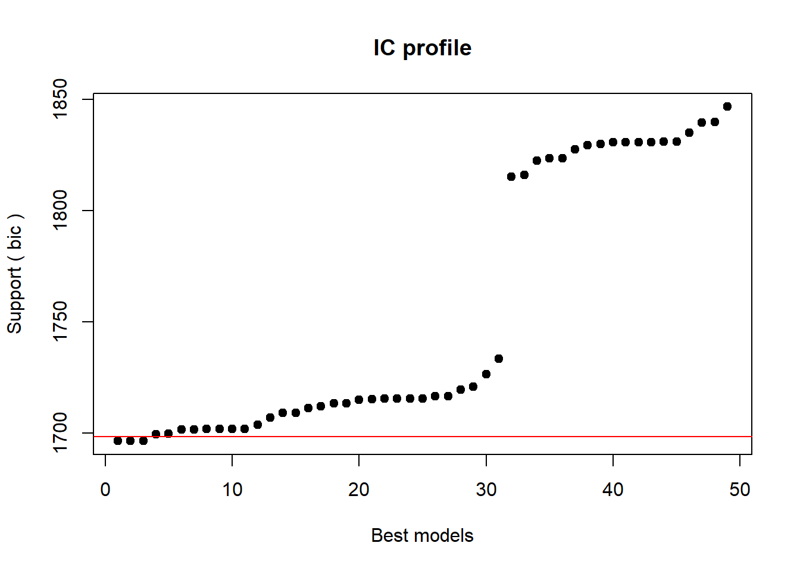
After 100 models:
Best model: SUFlike~1+Gender+ConversationType+Priming
Crit= 1696.58773399527
Mean crit= 1731.89001011619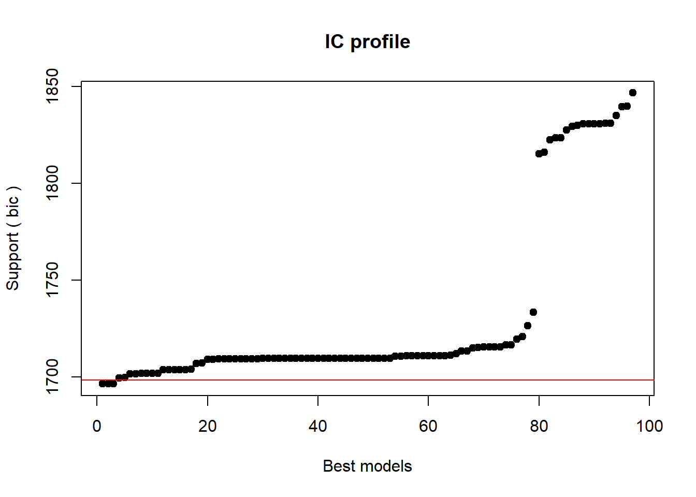
Completed.top <- weightable(mfit)
top[1:5, ] model
1 SUFlike ~ 1 + Gender + ConversationType + Priming
2 SUFlike ~ 1 + Gender + ConversationType + Priming + Priming:Gender
3 SUFlike ~ 1 + Gender + ConversationType + Priming + Priming:Gender + Priming:ConversationType
4 SUFlike ~ 1 + Gender + Priming + Priming:Gender
5 SUFlike ~ 1 + Gender + ConversationType + Priming + Priming:ConversationType
bic weights
1 1696.58773400 0.2567900973723
2 1696.76989551 0.2344349734951
3 1696.76989551 0.2344349734951
4 1699.62465884 0.0562494680822
5 1699.83927867 0.0505259300097The best model includes Gender, ConversationType, and Priming as fixed effects (no interactions). We fit this as our final minimal adequate model.
mlr.glmer <- glmer(SUFlike ~ (1 | ID) + Gender + ConversationType + Priming,
family = binomial,
control = glmerControl(optimizer = "bobyqa"),
data = mblrdata)
summary(mlr.glmer, corr = FALSE)Generalized linear mixed model fit by maximum likelihood (Laplace
Approximation) [glmerMod]
Family: binomial ( logit )
Formula: SUFlike ~ (1 | ID) + Gender + ConversationType + Priming
Data: mblrdata
Control: glmerControl(optimizer = "bobyqa")
AIC BIC logLik -2*log(L) df.resid
1668.6 1696.6 -829.3 1658.6 1995
Scaled residuals:
Min 1Q Median 3Q Max
-1.579361124 -0.415523657 -0.330409032 -0.312054062 3.247886696
Random effects:
Groups Name Variance Std.Dev.
ID (Intercept) 0.0837520803 0.289399517
Number of obs: 2000, groups: ID, 208
Fixed effects:
Estimate Std. Error z value
(Intercept) -1.067431314 0.149186333 -7.15502
GenderWomen -0.642887837 0.175329835 -3.66673
ConversationTypeSameGender -0.536428297 0.148819520 -3.60456
PrimingPrime 1.866249975 0.163248404 11.43196
Pr(>|z|)
(Intercept) 0.0000000000008366 ***
GenderWomen 0.00024567 ***
ConversationTypeSameGender 0.00031269 ***
PrimingPrime < 0.000000000000000222 ***
---
Signif. codes: 0 '***' 0.001 '**' 0.01 '*' 0.05 '.' 0.1 ' ' 1sigfit <- anova(mlr.glmer, m0.glmer, test = "Chi")
sigfitData: mblrdata
Models:
m0.glmer: SUFlike ~ (1 | ID)
mlr.glmer: SUFlike ~ (1 | ID) + Gender + ConversationType + Priming
npar AIC BIC logLik -2*log(L) Chisq Df
m0.glmer 2 1828.492271 1839.694076 -912.2461355 1824.492271
mlr.glmer 5 1668.583222 1696.587734 -829.2916108 1658.583222 165.90905 3
Pr(>Chisq)
m0.glmer
mlr.glmer < 0.000000000000000222 ***
---
Signif. codes: 0 '***' 0.001 '**' 0.01 '*' 0.05 '.' 0.1 ' ' 1The final model significantly outperforms the random-effects-only baseline.
Visualising Effects
plot_model(mlr.glmer, type = "pred",
terms = c("Gender", "Priming", "ConversationType")) +
theme_bw() +
labs(title = "Predicted probability of discourse like",
y = "Probability of discourse like")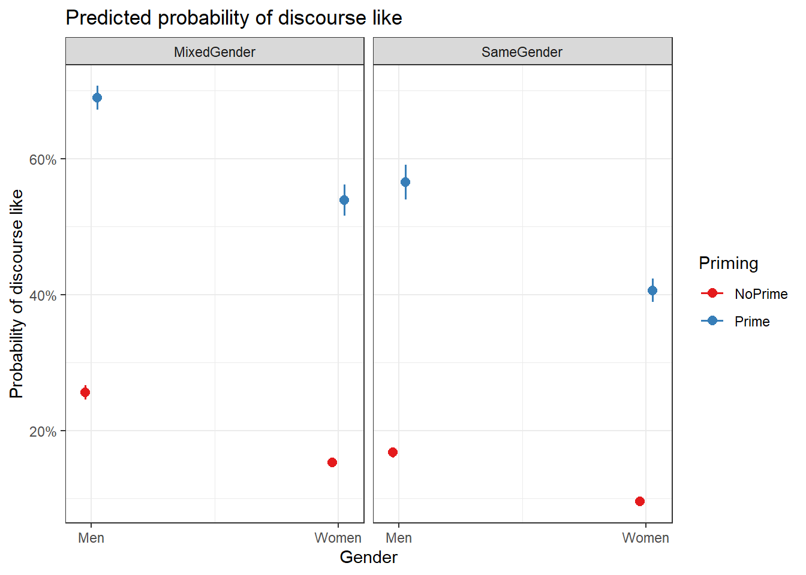
Model Fit Statistics
sjPlot::tab_model(mlr.glmer)| SU Flike | |||
|---|---|---|---|
| Predictors | Odds Ratios | CI | p |
| (Intercept) | 0.34 | 0.26 – 0.46 | <0.001 |
| Gender [Women] | 0.53 | 0.37 – 0.74 | <0.001 |
| ConversationType [SameGender] |
0.58 | 0.44 – 0.78 | <0.001 |
| Priming [Prime] | 6.46 | 4.69 – 8.90 | <0.001 |
| Random Effects | |||
| σ2 | 3.29 | ||
| τ00ID | 0.08 | ||
| ICC | 0.02 | ||
| N ID | 208 | ||
| Observations | 2000 | ||
| Marginal R2 / Conditional R2 | 0.131 / 0.152 | ||
MuMIn::r.squaredGLMM(mlr.glmer) R2m R2c
theoretical 0.1309177838511 0.1524932543996
delta 0.0662282560491 0.0771427838224Model Diagnostics
We use performance::check_model() to run the full diagnostic suite. For logistic mixed-effects models, the panel includes checks for binned residuals (the logistic equivalent of residuals vs. fitted), influential observations, normality of random effects, and multicollinearity.
performance::check_model(mlr.glmer)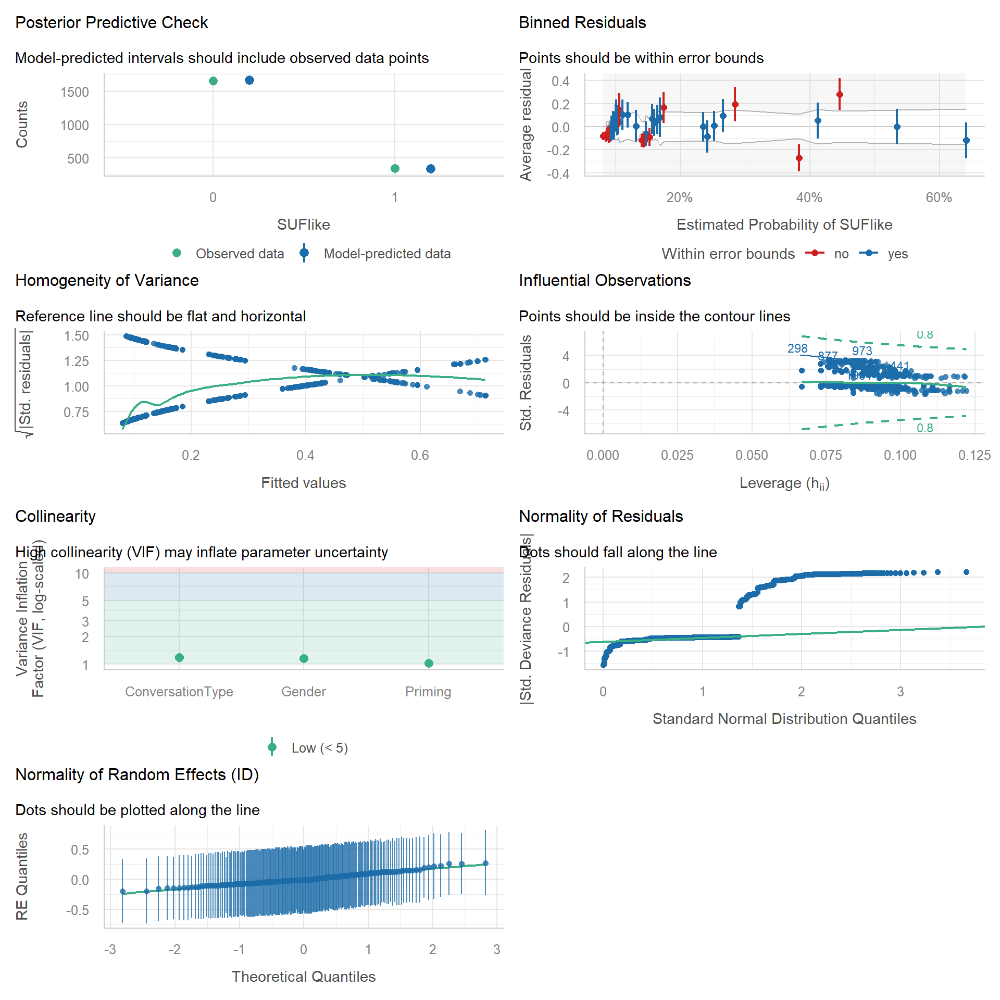
# Individual checks
performance::check_collinearity(mlr.glmer)# Check for Multicollinearity
Low Correlation
Term VIF VIF 95% CI adj. VIF Tolerance Tolerance 95% CI
Gender 1.16 [1.12, 1.19] 1.08 0.86 [0.84, 0.89]
ConversationType 1.18 [1.14, 1.22] 1.09 0.85 [0.82, 0.87]
Priming 1.02 [1.01, 1.04] 1.01 0.98 [0.96, 0.99]# check_outliers() requires numeric predictors; for models with only
# categorical fixed effects we inspect influence via Cook's distance instead
infl <- influence(mlr.glmer, group = "ID")
cooks_d <- cooks.distance(infl)
plot(cooks_d, type = "h",
ylab = "Cook's distance", xlab = "Speaker index",
main = "Cook's distance by speaker (random-effect level)")
abline(h = 4 / length(cooks_d), lty = 2, col = "firebrick") # rule-of-thumb threshold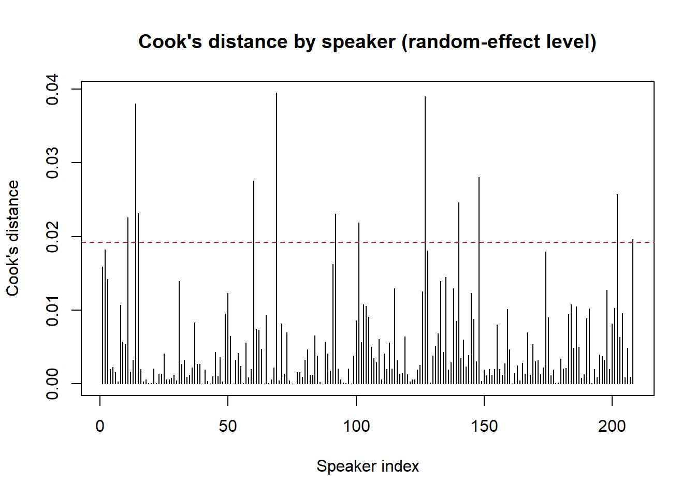
# Model performance summary including AUC (area under the ROC curve)
performance::model_performance(mlr.glmer)# Indices of model performance
AIC | AICc | BIC | R2 (cond.) | R2 (marg.) | ICC | RMSE | Sigma
--------------------------------------------------------------------------
1668.6 | 1668.6 | 1696.6 | 0.152 | 0.131 | 0.025 | 0.353 | 1
AIC | Log_loss | Score_log | Score_spherical
-----------------------------------------------
1668.6 | 0.405 | -68.556 | 0.004# ICC: proportion of variance at speaker level
performance::icc(mlr.glmer)# Intraclass Correlation Coefficient
Adjusted ICC: 0.025
Unadjusted ICC: 0.022
TipBinned Residuals for Logistic Models
For logistic regression models, raw residuals are not informative because they are binary (0 or 1 minus the predicted probability). performance::check_model() automatically uses binned residuals — the average residual within bins of predicted probabilities — which should scatter randomly around zero with approximately 95% of points falling within the error bounds (shown as dashed lines). Systematic patterns above or below the bounds indicate model misspecification.
Reporting Results
report::report(mlr.glmer)We fitted a logistic mixed model (estimated using ML and BOBYQA optimizer) to
predict SUFlike with Gender, ConversationType and Priming (formula: SUFlike ~
Gender + ConversationType + Priming). The model included ID as random effect
(formula: ~1 | ID). The model's total explanatory power is moderate
(conditional R2 = 0.15) and the part related to the fixed effects alone
(marginal R2) is of 0.13. The model's intercept, corresponding to Gender = Men,
ConversationType = MixedGender and Priming = NoPrime, is at -1.07 (95% CI
[-1.36, -0.78], p < .001). Within this model:
- The effect of Gender [Women] is statistically significant and negative (beta
= -0.64, 95% CI [-0.99, -0.30], p < .001; Std. beta = -0.64, 95% CI [-0.99,
-0.30])
- The effect of ConversationType [SameGender] is statistically significant and
negative (beta = -0.54, 95% CI [-0.83, -0.24], p < .001; Std. beta = -0.54, 95%
CI [-0.83, -0.24])
- The effect of Priming [Prime] is statistically significant and positive (beta
= 1.87, 95% CI [1.55, 2.19], p < .001; Std. beta = 1.87, 95% CI [1.55, 2.19])
Standardized parameters were obtained by fitting the model on a standardized
version of the dataset. 95% Confidence Intervals (CIs) and p-values were
computed using a Wald z-distribution approximation.
NoteWrite-Up Template: Mixed-Effects Logistic Regression
A mixed-effects binomial logistic regression model was fitted to predict the use of final discourse like in Irish English. Speaker (ID) was included as a random effect (random intercept). Inclusion of the random effect was justified by a likelihood ratio test comparing the mixed-effects baseline to a fixed-effects intercept-only model (p < .05) and by a lower AIC. All possible main effects and two-way interactions among Gender, Age, ConversationType, and Priming were evaluated using exhaustive model search with the glmulti package (BIC criterion). The final minimal adequate model included Gender, ConversationType, and Priming as fixed effects and significantly outperformed the random-effects baseline (χ²(3) = X, p < .001). Women used discourse like significantly less than men (β = −0.64, 95% CI [−0.99, −0.30], p < .001). Speakers in same-gender conversations used discourse like significantly less than in mixed-gender conversations (β = −0.54, 95% CI [−0.83, −0.24], p < .001). Priming was the strongest predictor: primed speech units showed substantially higher rates of discourse like (β = 1.87, 95% CI [1.55, 2.19], p < .001). Marginal R² = .13; conditional R² = .15.
Note✎ Check Your Understanding — Question 4
A mixed-effects logistic regression model predicting a binary linguistic feature gives a marginal R² of .13 and a conditional R² of .15. What can you conclude about the role of the random effect?
- The random effect (speaker) explains most of the variance in the model
- The random effect adds very little explanatory power beyond the fixed effects
- The model has a poor fit and should be re-specified
- The fixed effects and random effect together explain 28% of variance
Answer
b) The random effect adds very little explanatory power beyond the fixed effects
The difference between conditional R² (.15) and marginal R² (.13) is only .02, meaning the random effect structure (by-speaker random intercepts) accounts for approximately 2 percentage points of additional variance. This is in contrast to the linear mixed-effects model example above, where random effects explained a much larger share. Both scenarios are valid — it simply means that individual speaker differences are not a very strong source of variability for discourse like use once the fixed-effects predictors are included. The random effects are still necessary to ensure that standard errors are not underestimated due to the non-independence of speech units within speakers.
15 Mixed-Effects Poisson and Negative Binomial Regression
NoteSection Overview
What you will learn: How to choose between Poisson, quasi-Poisson, and negative binomial mixed-effects models for count data; how to detect and address overdispersion; and how to report results for each model type
Introduction
When the dependent variable is a count (a non-negative integer — number of errors, occurrences of a word, instances of a discourse feature), the appropriate model family is Poisson or one of its extensions. Poisson models assume that the mean equals the variance — a very restrictive assumption that is frequently violated in linguistic data. When the variance exceeds the mean (overdispersion), we must use a more robust alternative.
| Model | When to use | Key characteristic |
|---|---|---|
| Poisson | Count data, variance ≈ mean | Restrictive; standard starting point |
| Quasi-Poisson | Count data, variance > mean | Scales standard errors; coefficients unchanged |
| Negative binomial | Count data, variance >> mean | Adds explicit dispersion parameter; preferred by Zuur and Ieno (2016) |
TipWhy Not Just Use Quasi-Poisson?
Quasi-Poisson models scale the standard errors to compensate for overdispersion, which corrects p-values. However, the coefficients themselves remain those of the Poisson model and may still be biased under severe overdispersion. Negative binomial models include an additional dispersion parameter that accommodates overdispersion in the model structure itself, making the coefficients more reliable. Zuur and Ieno (2016) therefore recommend negative binomial over quasi-Poisson when overdispersion is substantial.
Example: Filler uhm Use by Language and Alcohol Consumption
The data for this section records the number of instances of the filler uhm in two-minute conversations in four languages (English, German, Russian, Mandarin), along with the number of alcoholic shots consumed by each speaker before the conversation.
Loading and Preparing the Data
Exploratory Visualisation
countdata |>
dplyr::group_by(Language) |>
dplyr::mutate(Mean = round(mean(Shots), 1),
SD = round(sd(Shots), 1)) |>
ggplot(aes(Language, Shots, color = Language, fill = Language)) +
geom_violin(trim = FALSE, color = "gray20") +
geom_boxplot(width = 0.1, fill = "white", color = "gray20") +
geom_text(aes(y = -4, label = paste("mean:", Mean)), size = 3, color = "black") +
geom_text(aes(y = -5, label = paste("SD:", SD)), size = 3, color = "black") +
scale_fill_manual(values = rep("grey90", 4)) +
theme_bw() + theme(legend.position = "none") +
ylim(-5, 15) + labs(x = "Language", y = "Shots consumed",
title = "Distribution of shots consumed by language")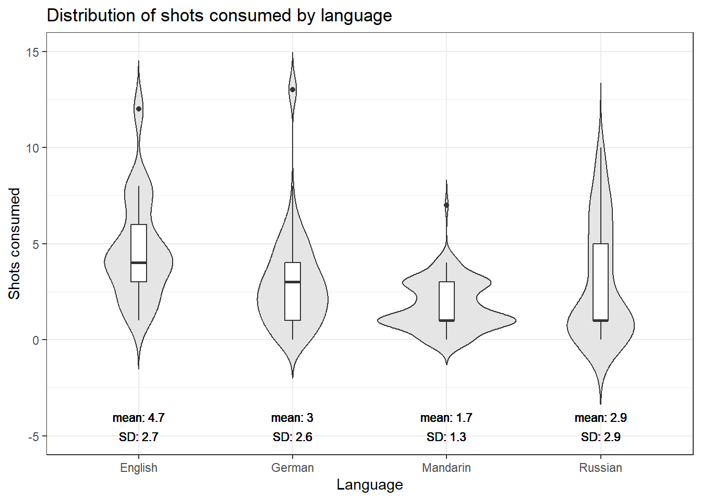
Variable Selection with Boruta
Boruta performed 99 iterations in 8.47781300545 secs.
1 attributes confirmed important: Shots;
1 attributes confirmed unimportant: Gender;
2 tentative attributes left: Language, Trial;Boruta identifies Shots as the only confirmed important predictor. Language is tentative. We include Language as a random effect for theoretical reasons (speakers are nested within language communities) even though it does not reach confirmed status.
Checking for Overdispersion
Before choosing between Poisson and its alternatives, we check whether the count data is plausibly Poisson-distributed.
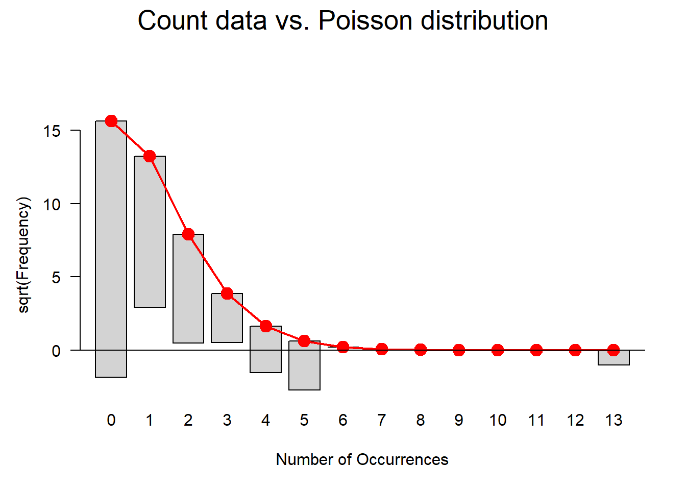
summary(gf)
Goodness-of-fit test for poisson distribution
X^2 df P(> X^2)
Likelihood Ratio 153.422771085 5 0.000000000000000000000000000000249336691328The goodness-of-fit test (p < .05) and the visual inspection both indicate that the data deviate from a Poisson distribution — the variance is greater than the mean (overdispersion). We will fit all three model types for comparison.
Mixed-Effects Poisson Regression
m0.glmer.p <- glmer(UHM ~ 1 + (1 | Language), data = countdata,
family = poisson,
control = glmerControl(optimizer = "bobyqa"))
m1.glmer.p <- update(m0.glmer.p, .~. + Shots)
car::Anova(m1.glmer.p, test = "Chi")Analysis of Deviance Table (Type II Wald chisquare tests)
Response: UHM
Chisq Df Pr(>Chisq)
Shots 321.24977 1 < 0.000000000000000222 ***
---
Signif. codes: 0 '***' 0.001 '**' 0.01 '*' 0.05 '.' 0.1 ' ' 1summary(m1.glmer.p)Generalized linear mixed model fit by maximum likelihood (Laplace
Approximation) [glmerMod]
Family: poisson ( log )
Formula: UHM ~ (1 | Language) + Shots
Data: countdata
Control: glmerControl(optimizer = "bobyqa")
AIC BIC logLik -2*log(L) df.resid
1041.8 1054.5 -517.9 1035.8 497
Scaled residuals:
Min 1Q Median 3Q Max
-1.509633852 -0.666423093 -0.592950422 0.586114082 4.338639382
Random effects:
Groups Name Variance Std.Dev.
Language (Intercept) 0 0
Number of obs: 500, groups: Language, 4
Fixed effects:
Estimate Std. Error z value Pr(>|z|)
(Intercept) -1.2789168850 0.0893313546 -14.31655 < 0.000000000000000222 ***
Shots 0.2336279071 0.0130347681 17.92344 < 0.000000000000000222 ***
---
Signif. codes: 0 '***' 0.001 '**' 0.01 '*' 0.05 '.' 0.1 ' ' 1
Correlation of Fixed Effects:
(Intr)
Shots -0.806
optimizer (bobyqa) convergence code: 0 (OK)
boundary (singular) fit: see help('isSingular')
WarningSingular Fit Warning
The model above produces a singular fit warning (Language variance ≈ 0). This means the random effect is not explaining any additional variance, and the mixed-effects model collapses to the fixed-effects equivalent. In a real analysis, this should lead you to remove the random effect and report a fixed-effects model instead. We continue here purely for illustration.
Checking Overdispersion in the Poisson Model
Overdispersion parameter: 1.169 cat("(Values > 1.5 indicate meaningful overdispersion)\n")(Values > 1.5 indicate meaningful overdispersion)diag_data <- data.frame(Pearson = PearsonResiduals, Fitted = fitted(m1.glmer.p))
p9 <- ggplot(diag_data, aes(Fitted, Pearson)) +
geom_point(alpha = .4) + geom_hline(yintercept = 0, linetype = "dotted") +
theme_bw() + labs(title = "Residuals vs. Fitted")
p10 <- ggplot(countdata, aes(Shots, diag_data$Pearson)) +
geom_point(alpha = .4) + geom_hline(yintercept = 0, linetype = "dotted") +
theme_bw() + labs(y = "Pearson residuals", title = "Residuals vs. Shots")
p11 <- ggplot(countdata, aes(Language, diag_data$Pearson)) +
geom_boxplot() + theme_bw() +
labs(y = "Pearson residuals", title = "Residuals by Language")
gridExtra::grid.arrange(p9, p10, p11, nrow = 1)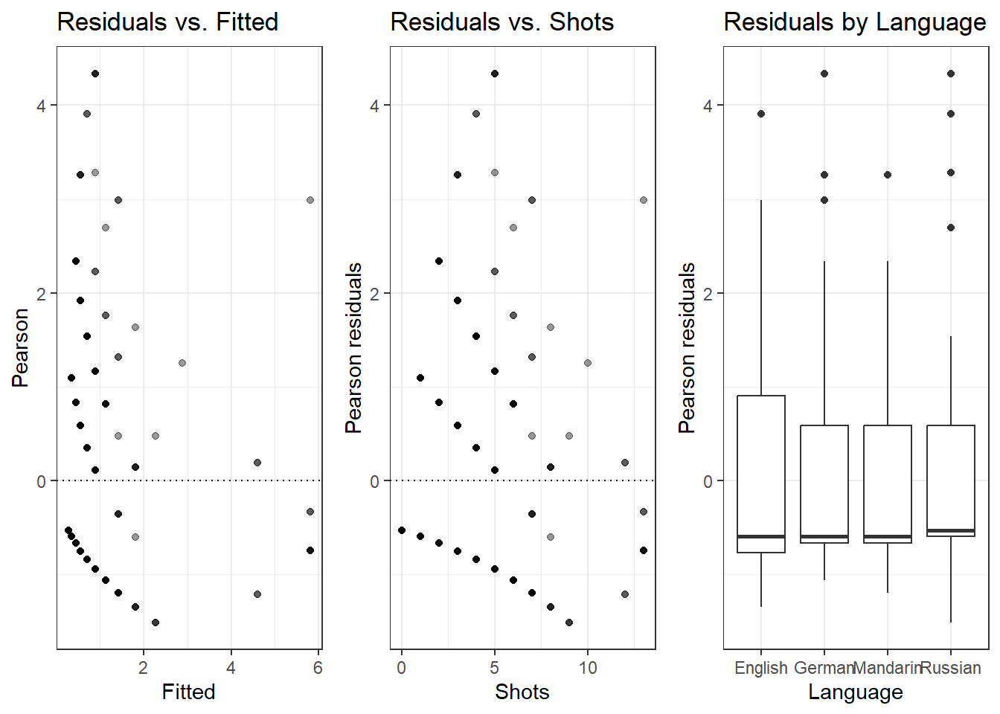
The diagnostic plots show patterning (lower-left clustering) consistent with overdispersion. We proceed to quasi-Poisson and negative binomial alternatives.
Mixed-Effects Quasi-Poisson Regression
m0.qp <- glmmPQL(UHM ~ 1,
random = ~1 | Language,
data = countdata,
family = quasipoisson(link = "log"))
m1.qp <- update(m0.qp, .~. + Shots)
car::Anova(m1.qp, test = "Chi")Analysis of Deviance Table (Type II tests)
Response: zz
Chisq Df Pr(>Chisq)
Shots 276.4523 1 < 0.000000000000000222 ***
---
Signif. codes: 0 '***' 0.001 '**' 0.01 '*' 0.05 '.' 0.1 ' ' 1summary(m1.qp)Linear mixed-effects model fit by maximum likelihood
Data: countdata
AIC BIC logLik
NA NA NA
Random effects:
Formula: ~1 | Language
(Intercept) Residual
StdDev: 0.0000407595004855 1.07801257915
Variance function:
Structure: fixed weights
Formula: ~invwt
Fixed effects: UHM ~ Shots
Value Std.Error DF t-value p-value
(Intercept) -1.278929721022 0.0964886326643 495 -13.2547190867 0
Shots 0.233630231741 0.0140795660799 495 16.5935676153 0
Correlation:
(Intr)
Shots -0.806
Standardized Within-Group Residuals:
Min Q1 Med Q3 Max
-1.400417640404 -0.618228066949 -0.550071160973 0.543731905024 4.024828853746
Number of Observations: 500
Number of Groups: 4 # odds ratios from fixed-effects equivalent
m1.glm.qp <- glm(UHM ~ Shots, data = countdata, family = quasipoisson(link = "log"))
exp(coef(m1.glm.qp)) (Intercept) Shots
0.278338612235 1.263174385573 The rate ratio for Shots is approximately 1.26: each additional shot is associated with a 26% increase in the predicted number of uhm fillers.
Overdispersion (quasi-Poisson): 1.006 plot(m1.qp, pch = 20, col = "black", lty = "dotted",
ylab = "Pearson residuals")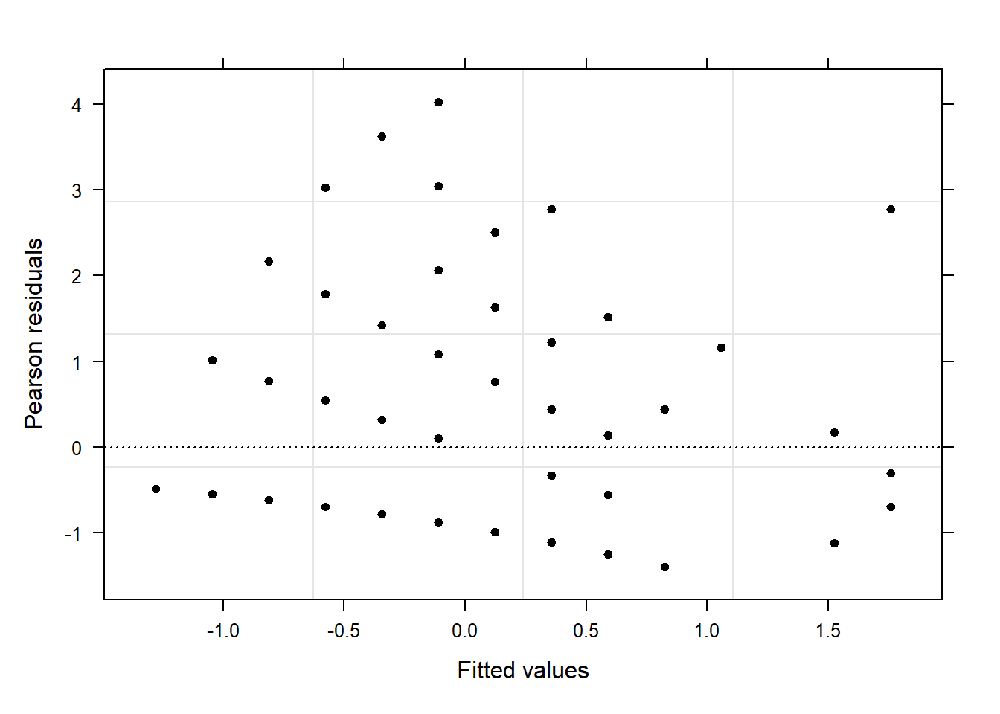
plot_model(m1.qp, type = "pred", terms = c("Shots")) +
theme_bw() + labs(title = "Predicted uhm frequency by shots consumed")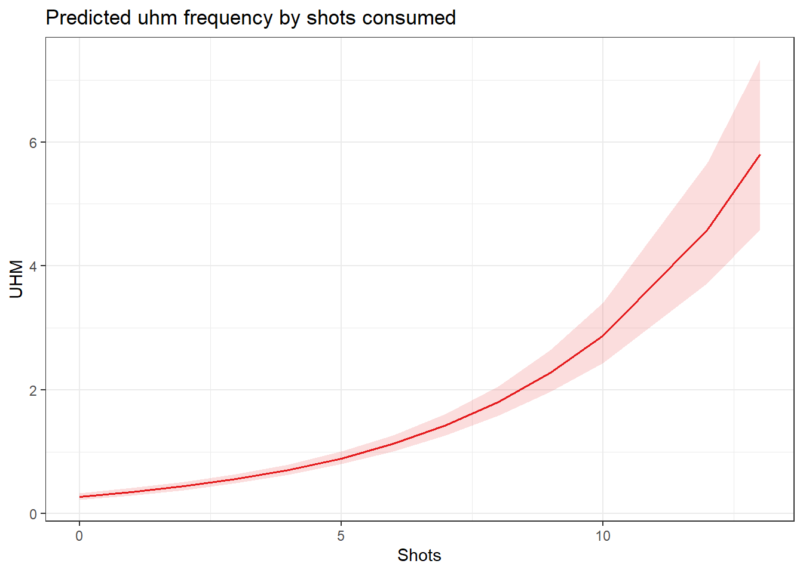
sjPlot::tab_model(m1.qp)| UHM | |||
|---|---|---|---|
| Predictors | Incidence Rate Ratios | CI | p |
| (Intercept) | 0.28 | 0.23 – 0.34 | <0.001 |
| Shots | 1.26 | 1.23 – 1.30 | <0.001 |
| N Language | 4 | ||
| Observations | 500 | ||
MuMIn::r.squaredGLMM(m1.qp) R2m R2c
delta 0.1856941878845 0.1856941887428
lognormal 0.2752763979322 0.2752763992045
trigamma 0.0977040663474 0.0977040667989Mixed-Effects Negative Binomial Regression
Data: countdata
Models:
m0.nb: UHM ~ 1 + (1 | Language)
m1.nb: UHM ~ (1 | Language) + Shots
npar AIC BIC logLik -2*log(L) Chisq Df
m0.nb 3 1159.000894 1171.644718 -576.5004470 1153.000894
m1.nb 4 1051.593288 1068.451721 -521.7966442 1043.593288 109.40761 1
Pr(>Chisq)
m0.nb
m1.nb < 0.000000000000000222 ***
---
Signif. codes: 0 '***' 0.001 '**' 0.01 '*' 0.05 '.' 0.1 ' ' 1Overdispersion (negative binomial): 2.469 diag_nb <- data.frame(Pearson = PearsonResiduals.nb, Fitted = fitted(m1.nb))
q9 <- ggplot(diag_nb, aes(Fitted, Pearson)) +
geom_point(alpha = .4) + geom_hline(yintercept = 0, linetype = "dotted") +
theme_bw() + labs(title = "NB: Residuals vs. Fitted")
q10 <- ggplot(countdata, aes(Shots, diag_nb$Pearson)) +
geom_point(alpha = .4) + geom_hline(yintercept = 0, linetype = "dotted") +
theme_bw() + labs(y = "Pearson", title = "NB: Residuals vs. Shots")
q11 <- ggplot(countdata, aes(Language, diag_nb$Pearson)) +
geom_boxplot() + theme_bw() +
labs(y = "Pearson", title = "NB: Residuals by Language")
gridExtra::grid.arrange(q9, q10, q11, nrow = 1)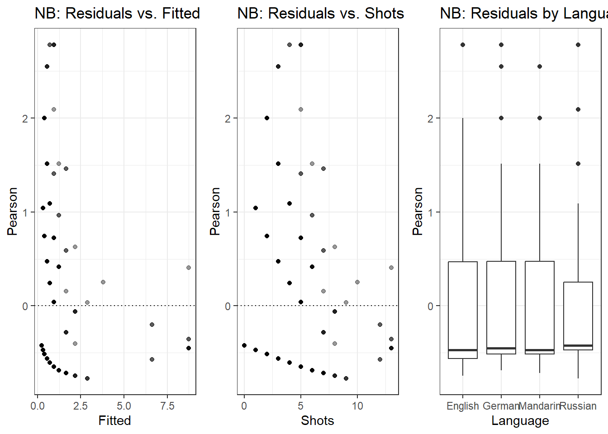
plot_model(m1.nb, type = "pred", terms = c("Shots")) +
theme_bw() + labs(title = "NB: Predicted uhm frequency by shots")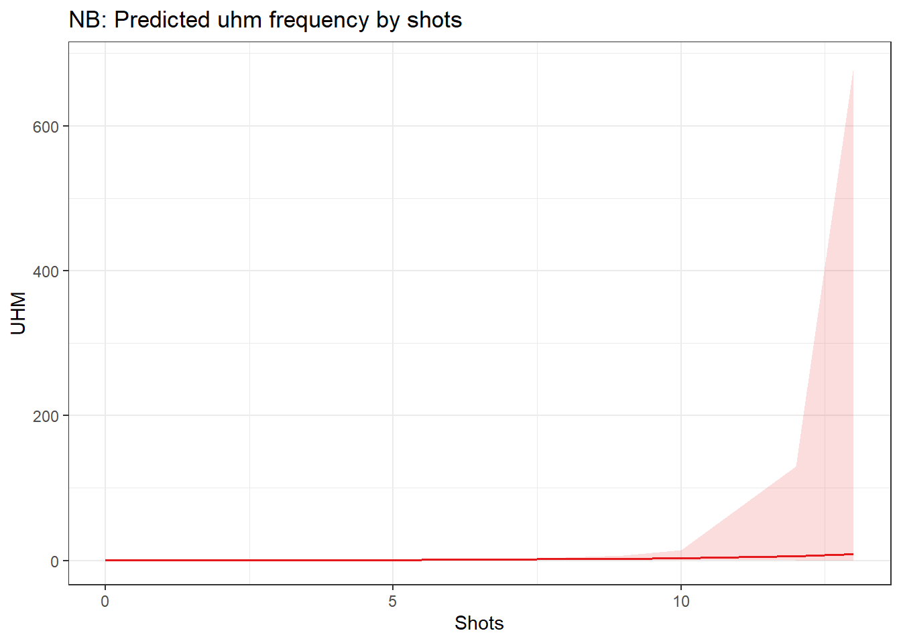
sjPlot::tab_model(m1.nb)| UHM | |||
|---|---|---|---|
| Predictors | Incidence Rate Ratios | CI | p |
| (Intercept) | 0.23 | 0.18 – 0.30 | <0.001 |
| Shots | 1.32 | 1.25 – 1.39 | <0.001 |
| Random Effects | |||
| σ2 | |||
| τ00Language | 0.00 | ||
| N Language | 4 | ||
| Observations | 500 | ||
MuMIn::r.squaredGLMM(m1.nb) R2m R2c
delta 0.1581899738532 0.1581899738532
lognormal 0.2798429229195 0.2798429229195
trigamma 0.0571165868642 0.0571165868642Model Comparison and Selection
| Model | Overdispersion | Singular fit? | Verdict |
|---|---|---|---|
| Poisson | Yes (> 1) | Yes | Not recommended |
| Quasi-Poisson | Reduced (closer to 1) | No | Acceptable |
| Negative binomial | Varies | Check | Often preferred |
For this data set, the quasi-Poisson model shows reduced overdispersion and no singular fit warning, making it preferable to the Poisson model. In general, when overdispersion is severe, prefer negative binomial over quasi-Poisson for more reliable coefficient estimates.
Reporting Results
NoteWrite-Up Template: Mixed-Effects Quasi-Poisson Regression
A mixed-effects quasi-Poisson regression model was fitted to predict the number of uhm fillers produced in two-minute conversations. Language was included as a random effect (random intercept). Prior to modelling, a Boruta variable selection procedure identified the number of alcoholic shots consumed as the only confirmed predictor; Language was tentative. A goodness-of-fit test confirmed that the data deviated from a Poisson distribution (overdispersion), justifying the use of a quasi-Poisson rather than a standard Poisson model. The final minimal adequate model showed that each additional shot consumed was associated with a significant 26% increase in the expected number of uhm fillers (rate ratio = 1.26, p < .001). The overdispersion parameter for the quasi-Poisson model was close to 1, indicating adequate fit after scaling.
Note✎ Check Your Understanding — Question 5
A researcher fits a Poisson mixed-effects model to count data and obtains an overdispersion parameter of 4.2. What is the most appropriate course of action?
- Report the Poisson model — an overdispersion parameter above 1 is always acceptable
- Switch to a quasi-Poisson or negative binomial model, as overdispersion of 4.2 indicates a serious violation
- Remove outliers until the overdispersion parameter drops below 2
- Add more fixed-effects predictors until the overdispersion is reduced
Answer
b) Switch to a quasi-Poisson or negative binomial model, as overdispersion of 4.2 indicates a serious violation
An overdispersion parameter of 1 is ideal for Poisson models (variance = mean). Values modestly above 1 (say, < 1.5) can often be tolerated, but a value of 4.2 indicates that the variance is more than four times the mean — a serious violation that will produce underestimated standard errors and inflated Type I error in a standard Poisson model. The correct response is to switch to a quasi-Poisson model (which scales standard errors) or — better — a negative binomial model (which models the overdispersion explicitly). Simply removing outliers or adding more predictors is not a principled solution to overdispersion.
16 Mixed-Effects Ordinal Regression
NoteSection Overview
What you will learn: When and why to use mixed-effects ordinal regression; how to fit, diagnose, and interpret a clmm() model; and how to report ordinal mixed-effects results
Introduction
Mixed-effects ordinal regression (also called the cumulative link mixed model, CLMM) is the appropriate choice when:
- The dependent variable is an ordered categorical variable with three or more levels — such as a Likert scale (Strongly Disagree → Strongly Agree), an acceptability rating, a proficiency level, or an error severity score
- Observations are not independent — for example, multiple ratings from the same participant or rater, or multiple items rated by different people
The clmm() function from the ordinal package (ordinal?) implements the proportional odds mixed model — an extension of the fixed-effects proportional odds model (polr() from MASS) that adds random effects.
ImportantWhy Not Treat Ordinal Data as Continuous?
Treating an ordinal variable (e.g. a 5-point Likert scale) as a continuous dependent variable in a linear model is tempting but problematic: it assumes equal intervals between scale points (that the difference between 1 and 2 is the same as the difference between 4 and 5), which is rarely justified. Ordinal regression makes no such assumption — it models the cumulative probability of being at or below each category without assuming equal intervals.
Example: Accentedness Ratings in a Rating Experiment
The data represent the results of a rating experiment in which raters evaluated the accentedness of speech samples from speakers of two language families (Language Family: Germanic vs. Romance) across two groups (Group: L2 learners vs. native speakers). The dependent variable (Accent) is an ordered factor with five levels.
Loading and Inspecting the Data
Rater Child Group Accent AccentNumeric Family
1 R1 C001 Child StrongAccent 2 DomBilingual
2 R2 C001 Child StrongAccent 2 DomBilingual
3 R3 C001 Child StrongAccent 2 DomBilingual
4 R4 C001 Child StrongAccent 2 DomBilingual
5 R5 C001 Child StrongAccent 2 DomBilingual
6 R6 C001 Child StrongAccent 2 DomBilingual
7 R7 C001 Child StrongAccent 2 DomBilingual
8 R8 C001 Child StrongAccent 2 DomBilingual
9 R9 C001 Child StrongAccent 2 DomBilingual
10 R10 C001 Child WeakAccent 1 DomBilingual# A tibble: 3 × 4
Family NoAccent StrongAccent WeakAccent
<fct> <int> <int> <int>
1 DomBilingual 80 145 174
2 EqualBilingual 20 22 63
3 Monolingual 209 1 41Exploratory Visualisation
p_mean <- ratex |>
ggplot(aes(Family, AccentNumeric, color = Group)) +
stat_summary(fun = mean, geom = "point", size = 2) +
stat_summary(fun.data = mean_cl_boot, geom = "errorbar", width = 0.2) +
theme_bw() + theme(legend.position = "top") +
scale_color_manual(values = c("gray20", "gray70")) +
labs(y = "Mean accentedness rating", title = "Mean rating by family and group")
p_box <- ratex |>
dplyr::group_by(Family, Rater, Group) |>
dplyr::summarise(AccentMean = mean(AccentNumeric), .groups = "drop") |>
ggplot(aes(Family, AccentMean, fill = Group)) +
geom_boxplot() + theme_bw() + theme(legend.position = "top") +
scale_fill_manual(values = c("gray50", "gray85")) +
labs(y = "Mean accentedness (by rater)", title = "Rater-level ratings by family and group")
gridExtra::grid.arrange(p_mean, p_box, nrow = 1)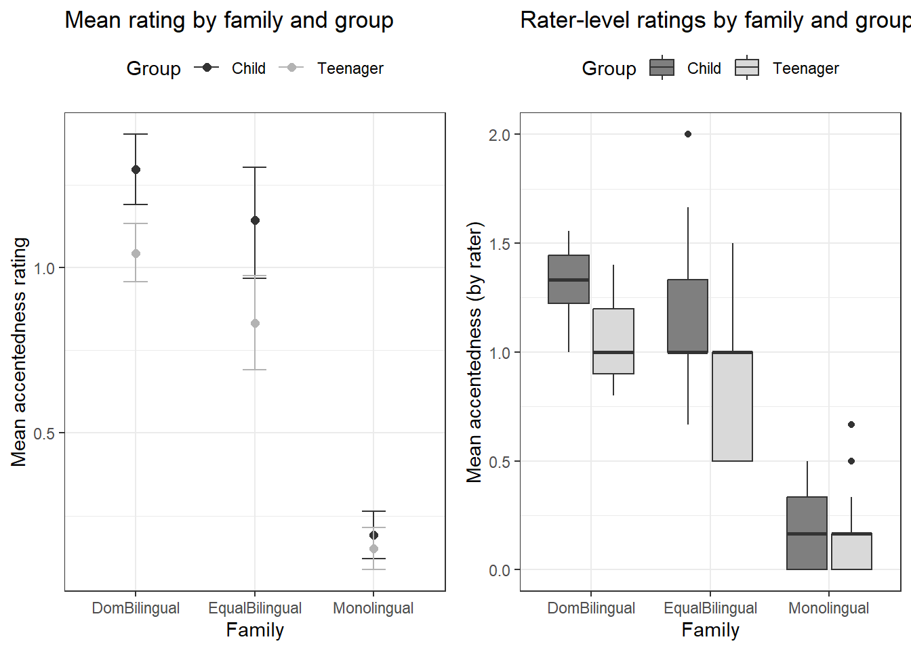
The plots suggest that Language Family affects accentedness ratings, with the direction possibly modulated by Group.
Fitting the Ordinal Mixed-Effects Model
We fit a model with Rater as a random effect (multiple ratings per rater) and Family as the fixed-effects predictor.
[1] "No separation detected — OK to proceed"summary(m1.or)Cumulative Link Mixed Model fitted with the Laplace approximation
formula: Accent ~ (1 | Rater) + Family
data: ratex
link threshold nobs logLik AIC niter max.grad cond.H
logit flexible 755 -685.13 1380.26 371(435) 3.04e-07 2.9e+05
Random effects:
Groups Name Variance Std.Dev.
Rater (Intercept) 0.00000000353434196 0.0000594503318
Number of groups: Rater 21
Coefficients:
Estimate Std. Error z value Pr(>|z|)
FamilyEqualBilingual 0.477744668 0.214314867 2.22917 0.025802
FamilyMonolingual -2.550224082 0.198852092 -12.82473 < 0.0000000000000002
FamilyEqualBilingual *
FamilyMonolingual ***
---
Signif. codes: 0 '***' 0.001 '**' 0.01 '*' 0.05 '.' 0.1 ' ' 1
Threshold coefficients:
Estimate Std. Error z value
NoAccent|StrongAccent -1.0798112480 0.1058010986 -10.20605
StrongAccent|WeakAccent 0.1060945025 0.0951357711 1.11519The model outputs:
-
Threshold coefficients (
1|2,2|3,3|4,4|5): these are the log-odds of being at or below each category for the reference level of Family. They define the cut-points of the latent continuous response. - Fixed-effect coefficient for Family: the log-odds shift associated with moving from the reference Family level to the other level.
TipInterpreting Threshold Coefficients
In a cumulative link model, the threshold coefficient k|(k+1) is the log-odds of rating at or below category \(k\) (compared to above \(k\)) for the reference group. For example, 1|2 = -2.15 means the log-odds of rating ≤ 1 vs. > 1 for the reference Family is −2.15 — a low probability of rating at the bottom of the scale.
The fixed-effect coefficient for Family shifts all thresholds simultaneously by the same amount (the proportional odds assumption). A positive coefficient means the distribution shifts towards higher ratings for that Family level.
Post-Hoc Comparisons
emmeans::lsmeans(m1.or, pairwise ~ Family, adjust = "tukey")$lsmeans
Family lsmean SE df asymp.LCL asymp.UCL
DomBilingual 0.487 0.0914 Inf 0.308 0.666
EqualBilingual 0.965 0.1950 Inf 0.582 1.347
Monolingual -2.063 0.1740 Inf -2.404 -1.722
Confidence level used: 0.95
$contrasts
contrast estimate SE df z.ratio p.value
DomBilingual - EqualBilingual -0.478 0.214 Inf -2.229 0.0664
DomBilingual - Monolingual 2.550 0.199 Inf 12.825 <0.0001
EqualBilingual - Monolingual 3.028 0.265 Inf 11.438 <0.0001
P value adjustment: tukey method for comparing a family of 3 estimates Model Summary Table
sjPlot::tab_model(m1.or)| Accent | |||
|---|---|---|---|
| Predictors | Odds Ratios | CI | p |
| NoAccent|StrongAccent | 0.34 | 0.28 – 0.42 | <0.001 |
| StrongAccent|WeakAccent | 1.11 | 0.92 – 1.34 | 0.265 |
| Family [EqualBilingual] | 1.61 | 1.06 – 2.45 | 0.026 |
| Family [Monolingual] | 0.08 | 0.05 – 0.12 | <0.001 |
| Random Effects | |||
| σ2 | 3.29 | ||
| τ00Rater | 0.00 | ||
| N Rater | 21 | ||
| Observations | 755 | ||
| Marginal R2 / Conditional R2 | 0.325 / NA | ||
Visualising Effects
plot_model(m1.or, type = "pred", terms = c("Family")) +
theme_bw() +
labs(title = "Predicted probability of each accentedness rating by language family",
y = "Predicted probability", x = "Language family")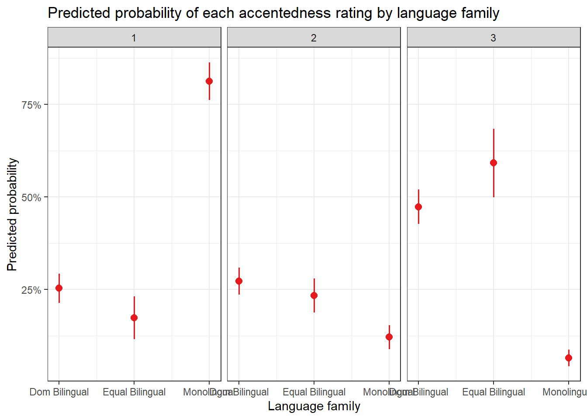
Model Diagnostics
For ordinal mixed-effects models, formal diagnostic plots are less well developed than for linear or logistic models. Key checks include:
- Convergence: ensure the model converged (no warnings about convergence failure)
- Complete separation: if any cell of the contingency table between the response and a predictor is empty, the model may produce unreliable thresholds
-
Proportional odds assumption: the
branttest (for fixed-effects ordinal models) or a comparison of constrained vs. unconstrained models can be used to test this assumption
Reporting Results
NoteWrite-Up Template: Mixed-Effects Ordinal Regression
A mixed-effects cumulative link model (proportional odds; logit link) was fitted to predict accentedness ratings (5-point ordered scale). Rater was included as a random effect (random intercept) to account for the non-independence of multiple ratings from the same rater. The model was fitted using the clmm() function from the ordinal package. Language Family was a significant predictor of accentedness ratings (β = X, SE = Y, z = Z, p = .W). Post-hoc pairwise comparisons with Tukey correction confirmed significant differences between [Family A] and [Family B] (p = .V). The proportional odds assumption was not formally tested for the mixed model; visual inspection of predicted probabilities suggested the assumption was approximately satisfied.
Note✎ Check Your Understanding — Question 6
A researcher uses a 7-point Likert scale (1 = Strongly Disagree → 7 = Strongly Agree) as the dependent variable. Multiple participants rated the same 30 items. Which model is most appropriate?
- Linear mixed-effects model with Participant as a random effect only
- Binomial logistic mixed-effects model after dichotomising the scale at the midpoint
- Mixed-effects cumulative link model (
clmm) with Participant and Item as crossed random effects - Fixed-effects ordinal regression with
polr(), ignoring the grouping structure
Answer
c) Mixed-effects cumulative link model (clmm) with Participant and Item as crossed random effects
The dependent variable is ordered categorical (a 7-point Likert scale), which calls for an ordinal model rather than a linear or binary logistic model. Because every participant rates every item, the design has crossed random effects — both participants and items should be included as random intercepts. Option (a) uses a linear model and includes only participant-level random effects, ignoring item-level variance. Option (b) throws away information by collapsing the 7-point scale to binary. Option (d) ignores the non-independence of observations, underestimates standard errors, and inflates Type I error.
17 Mixed-Effects Multinomial Regression
NoteSection Overview
This section provides a brief implementation showcase of mixed-effects multinomial regression using mblogit() from the mclogit package. It is intentionally brief — a full treatment of multinomial regression concepts and diagnostics is outside the scope of this chapter.
Introduction
Mixed-effects multinomial logistic regression is used when the dependent variable is unordered categorical with three or more levels (e.g. choice of variant A vs. B vs. C in a variation study) and observations are grouped within speakers or items.
Example: Picture Description Responses
Id Participant Group Item Response Gender Age
1 1 G001 German_Mono 1 NumeralNoun Male 18
2 2 G002 German_Mono 3 NumeralNoun Male 18
3 3 G003 German_Mono 4 NumeralNoun Male 18
4 4 G004 German_Mono 6 QuantAdjNoun Male 18
5 5 G005 German_Mono 8 NumeralNoun Male 18
6 6 G006 German_Mono 9 QuantAdjNoun Male 18m0.mn <- mblogit(formula = Response ~ 1,
random = ~1 | Participant,
data = pict)
Iteration 1 - deviance = 2452.1657181 - criterion = 0.840346812538
Iteration 2 - deviance = 2412.75547123 - criterion = 0.064601361276
Iteration 3 - deviance = 2411.26894466 - criterion = 0.00534731178399
Iteration 4 - deviance = 2411.2582473 - criterion = 0.0000446387422433
Iteration 5 - deviance = 2411.25823534 - criterion = 0.00000000314059538387
convergedm1.mn <- mblogit(formula = Response ~ Gender + Group,
random = ~1 | Item,
data = pict)
Iteration 1 - deviance = 1652.54499424 - criterion = 0.800708039017
Iteration 2 - deviance = 1571.22116522 - criterion = 0.0814899820197
Iteration 3 - deviance = 1551.91023391 - criterion = 0.0274469746195
Iteration 4 - deviance = 1547.29823345 - criterion = 0.00512667078353
Iteration 5 - deviance = 1546.02170442 - criterion = 0.000173543402508
Iteration 6 - deviance = 1545.8333116 - criterion = 0.00000024492639907
Iteration 7 - deviance = 1545.82769259 - criterion = 0.000000000000785571393367
convergedanova(m0.mn, m1.mn)Analysis of Deviance Table
Model 1: Response ~ 1
Model 2: Response ~ Gender + Group
Resid. Df Resid. Dev Df Deviance
1 3261 2411.258235
2 3249 1545.827693 12 865.4305427sjPlot::tab_model(m1.mn)| Response: NumeralNoun | Response: QuantAdjNoun | Response: QuantNoun | |||||||
|---|---|---|---|---|---|---|---|---|---|
| Predictors | Odds Ratios | CI | p | Odds Ratios | CI | p | Odds Ratios | CI | p |
| (Intercept) | 2.99 | 0.63 – 14.20 | 0.169 | 1.81 | 0.68 – 4.82 | 0.232 | 0.11 | 0.03 – 0.50 | 0.004 |
| GenderMale | 1.07 | 0.73 – 1.58 | 0.725 | 1.35 | 0.83 – 2.20 | 0.227 | 0.69 | 0.30 – 1.60 | 0.388 |
| GroupGerman_Mono | 0.04 | 0.02 – 0.07 | <0.001 | 0.02 | 0.01 – 0.04 | <0.001 | 0.09 | 0.02 – 0.44 | 0.003 |
| GroupL2_Advanced | 0.63 | 0.35 – 1.16 | 0.137 | 0.11 | 0.06 – 0.22 | <0.001 | 2.20 | 0.58 – 8.42 | 0.248 |
| GroupL2_Intermediate | 0.31 | 0.17 – 0.58 | <0.001 | 0.05 | 0.02 – 0.11 | <0.001 | 0.86 | 0.20 – 3.67 | 0.841 |
| N Item | 10 | ||||||||
| Observations | 1090 | ||||||||
WarningThis Section Is a Showcase Only
The analysis above is deliberately brief and skips full diagnostics and model validation. It is intended only to demonstrate how to implement a mixed-effects multinomial model in R. Do not use it as a template for a complete research analysis — always perform and report full diagnostics.
18 Summary and Model Comparison
NoteSection Overview
What you will learn: A consolidated overview of when to use each mixed-effects model type, key implementation functions, and the most important points to check and report for each
The table below summarises the five mixed-effects model types covered in this tutorial:
| Model type | Dependent variable | Key function(s) | Key diagnostic |
|---|---|---|---|
| Linear | Continuous |
lmer(), lme()
|
performance::check_model(), ICC, Levene’s test |
| Logistic (binary) | Binary (0/1) | glmer(..., family=binomial) |
performance::check_model(), AUC, binned residuals |
| Poisson | Count (underdispersed) | glmer(..., family=poisson) |
Overdispersion parameter, check_model()
|
| Quasi-Poisson / NB | Count (overdispersed) |
glmmPQL(), glmer.nb()
|
Overdispersion parameter, diagnostic plots |
| Ordinal | Ordered categorical | clmm() |
Convergence, separation, proportional odds |
| Multinomial | Unordered categorical (3+) | mblogit() |
VIF, convergence |
General workflow for any mixed-effects model:
- Inspect the data — visualise distributions, group differences, and potential outliers before modelling
-
Set contrasts deliberately — use
contrasts()oroptions(contrasts = ...)before fitting; choose treatment, sum, Helmert, or planned contrasts based on your design - Centre (and possibly scale) numeric predictors — makes intercepts interpretable and improves model stability
- Test whether random effects are warranted — compare AIC of fixed- vs. mixed-effects baseline with a likelihood ratio test
- Decide on the random effects structure — random intercepts only vs. random intercepts + slopes; nested vs. crossed
-
Build fixed effects step by step — use
anova()withrefit = TRUE(ML) for fixed-effects comparisons -
Run diagnostics with
performance—check_model()for a full panel;icc()for the intraclass correlation;model_performance()for a summary table of fit indices -
Extract effect sizes — marginal and conditional R² via
MuMIn::r.squaredGLMM()orperformance::r2() - Report clearly — include model type, contrast scheme, random effects structure, comparison statistics, fixed-effect estimates with CIs, ICC, and R²
Note✎ Check Your Understanding — Question 7
A researcher is studying how often L2 speakers self-correct during oral production. Each speaker produced 30 utterances, and the dependent variable is the number of self-corrections per utterance. A Poisson model gives an overdispersion parameter of 0.8. What should the researcher do?
- Switch to a negative binomial model because Poisson models should never be used
- Use the Poisson model — an overdispersion parameter below 1 indicates underdispersion, which is within acceptable range for a Poisson model
- Switch to a linear mixed-effects model because the count is approximately continuous
- Switch to a logistic model after dichotomising (corrected vs. not corrected)
Answer
b) Use the Poisson model — an overdispersion parameter below 1 indicates underdispersion, which is within acceptable range for a Poisson model
An overdispersion parameter of 0.8 indicates underdispersion (variance slightly less than the mean) rather than overdispersion (variance greater than the mean). Mild underdispersion is generally not a problem for Poisson models and does not warrant switching to a negative binomial model (which addresses overdispersion, not underdispersion). Quasi-Poisson models also address overdispersion only. Switching to a linear model ignores the count nature of the data and risks predicting negative values. Dichotomising throws away information. The correct response is to proceed with the Poisson model and note the overdispersion parameter in the methods section.
NoteSource and Attribution
This chapter adapts material from the LADAL tutorial Mixed-Effects Models in R by Martin Schweinberger (CC BY 4.0), restructured and edited for this seminar. Thanks to Stefan Thomas Gries for feedback that substantially improved earlier versions of this material.
Barr, Dale J., Roger Levy, Christoph Scheepers, and Harry J. Tily. 2013. “Random Effects Structure for Confirmatory Hypothesis Testing: Keep It Maximal.” Journal of Memory and Language 68 (3): 255–78. https://doi.org/10.1016/j.jml.2012.11.001.
Bartón, Kamil. 2020. MuMIn: Multi-Model Inference. https://CRAN.R-project.org/package=MuMIn.
Bell, Bethany A., Grant B. Morgan, Jeffrey D. Kromrey, and John M. Ferron. 2008. “The Impact of Small Cluster Size on Multilevel Models: A Monte Carlo Examination of Two-Level Models with Binary and Continuous Predictors.” JSM Proceedings, Section on Survey Research Methods.
Johnson, Patrick C. D. 2014. “Extension of Nakagawa & Schielzeth’s \(R^2_{GLMM}\) to Random Slopes Models.” Methods in Ecology and Evolution.
Murayama, Kou, Michiko Sakaki, Veronica X. Yan, and Gregory M. Smith. 2014. “Type i Error Inflation in the Traditional by-Participant Analysis to Metamemory Accuracy: A Generalized Mixed-Effects Model Perspective.” Journal of Experimental Psychology: Learning, Memory, and Cognition.
Pinheiro, José C., and Douglas M. Bates. 2000. Mixed-Effects Models in s and s-PLUS. Springer.
Winter, Bodo. 2019. Statistics for Linguists: An Introduction Using r. Routledge.
Zuur, Alain F., and Elena N. Ieno. 2016. A Beginner’s Guide to Generalized Additive Mixed Models with r. Highland Statistics Ltd.
Sincere thanks to Stefan Thomas Gries, whose detailed feedback and corrections substantially improved earlier versions of this material. All remaining errors are my own.↩︎